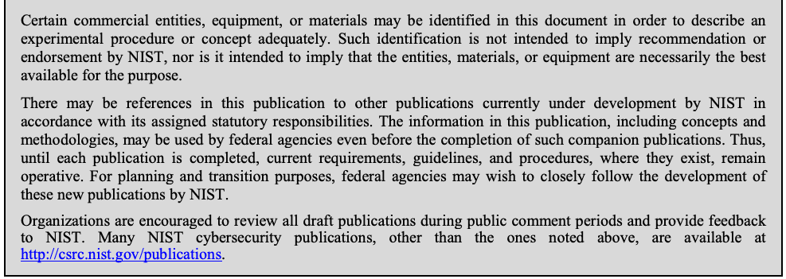

NIST SP 800-175A 日本語訳
英語タイトル : Guideline for Using Cryptographic Standards in the Federal Government: Directives, Mandates and Policies日本語タイトル : 連邦政府における暗号標準の使用に関するガイドライン：指令、義務、方針
公開日 : 2016-08-22
原文URL : https://csrc.nist.gov/pubs/sp/800/175/a/final
翻訳編集 : 自動生成（有志による非公式の日本語訳）, 原文取得日 : 2026-09-29, 訳文 : 492 / 492 ブロック
[要約] SP 800-175A は、伝送中および保管中の機微な非機密デジタル情報を保護するために暗号技術と NIST の暗号規格を使う連邦政府向け指針シリーズの一部で、暗号を使用する要件の決定に関する指針を示します。連邦政府の機微情報の保護に関する法律・規則・指令の概要、保護対象と最適な保護方法を決めるリスク評価の指針、関連するセキュリティ文書の説明を含みます。暗号保護を使うかどうかは保護対象情報の所有者が決めるもので、本書はその判断の基礎を示します。連邦政府外での使用は完全に任意です。
NIST Special Publication 800-175A
NIST特別刊行物800-175A
Guideline for Using Cryptographic Standards in the Federal Government:
連邦政府における暗号規格の使用に関する指針：
Directives, Mandates and Policies
指令、義務および方針
Elaine Barker
Elaine Barker
William C. Barker
William C. Barker
This publication is available free of charge from: http://dx.doi.org/10.6028/NIST.SP.800-175A
本刊行物は次のURLから無料で入手できます：http://dx.doi.org/10.6028/NIST.SP.800-175A
C O M P U T E R S E C U R I T Y
コンピューターセキュリティ
［NIST のロゴ。公的な標章のため、この非公式サイトには掲載していません。原本 PDF を参照してください。］
NIST Special Publication 800-175A
NIST特別刊行物800-175A
Guideline for Using
使用の指針
Cryptographic Standards in the
暗号規格
Federal Government:
連邦政府：
Directives, Mandates and Policies
指令、義務および方針
Elaine Barker
Elaine Barker
Computer Security Division Information Technology Laboratory
コンピューターセキュリティ部 情報技術研究所
William C. Barker Domestic Guest Researcher
William C. Barker 米国内客員研究員
Information Technology Laboratory
情報技術研究所
This publication is available free of charge from: http://dx.doi.org/10.6028/NIST.SP.800-175A
本刊行物は次のURLから無料で入手できます：http://dx.doi.org/10.6028/NIST.SP.800-175A
August 2016
2016年8月
U.S. Department of Commerce Penny Pritzker, Secretary
米国商務省 ペニー・プリツカー長官
National Institute of Standards and Technology
国立標準技術研究所
Willie May, Under Secretary of Commerce for Standards and Technology and Director
ウィリー・メイ、商務省標準技術担当次官兼所長
Authority
権限
This publication has been developed by NIST in accordance with its statutory responsibilities under the Federal Information Security Modernization Act of 2014, 44 U.S.C. § 3551 et seq., Public Law (P.L.) 113-283. NIST is responsible for developing information security standards and guidelines, including minimum requirements for federal information systems, but such standards and guidelines shall not apply to national security systems without the express approval of appropriate federal officials exercising policy authority over such systems. This guideline is consistent with the requirements of the Office of Management and Budget (OMB) Circular A-130.
本刊行物は、2014年連邦情報セキュリティ近代化法、合衆国法典第44編第3551条以下、公法113-283に基づく法定責任に従ってNISTが作成しました。NISTは、連邦情報システムの最低要件を含む情報セキュリティ標準および指針の策定に責任を負います。ただし、国家安全保障システムを所管する適切な連邦当局者が明示的に承認しない限り、これらの標準および指針は国家安全保障システムに適用されません。本指針は、行政管理予算局（OMB）通達A-130の要件に整合します。
Nothing in this publication should be taken to contradict the standards and guidelines made mandatory and binding on federal agencies by the Secretary of Commerce under statutory authority. Nor should these guidelines be interpreted as altering or superseding the existing authorities of the Secretary of Commerce, Director of the OMB, or any other federal official. This publication may be used by nongovernmental organizations on a voluntary basis and is not subject to copyright in the United States. Attribution would, however, be appreciated by NIST.
本刊行物のいかなる内容も、法定権限に基づいて商務長官が連邦機関に義務付け、拘束力を持たせた標準および指針と矛盾するものと解釈してはなりません。また、本指針は、商務長官、OMB長官または他の連邦当局者の既存の権限を変更または置き換えるものと解釈してはなりません。本刊行物は非政府組織も任意で使用でき、米国では著作権の対象ではありません。ただし、NISTへの帰属表示が望まれます。
National Institute of Standards and Technology Special Publication 800-175A Natl. Inst. Stand. Technol. Spec. Publ. 800-175A, 37 pages (August 2016) CODEN: NSPUE2
国立標準技術研究所 特別刊行物800-175A。Natl. Inst. Stand. Technol. Spec. Publ. 800-175A、37ページ（2016年8月）CODEN：NSPUE2
This publication is available free of charge from: http://dx.doi.org/10.6028/NIST.SP.800-175A
本刊行物は次のURLから無料で入手できます：http://dx.doi.org/10.6028/NIST.SP.800-175A
Certain commercial entities, equipment, or materials may be identified in this document in order to describe an experimental procedure or concept adequately. Such identification is not intended to imply recommendation or endorsement by NIST, nor is it intended to imply that the entities, materials, or equipment are necessarily the best available for the purpose.
原本PDFの抜粋画像

実験手順または概念を適切に説明するため、本書では特定の商業主体、機器、または材料を特定することがあります。このような特定は、NISTによる推奨または推薦を意味するものではなく、また当該主体、材料、または機器が目的に対して入手可能な最良のものであることを意味するものでもありません。
There may be references in this publication to other publications currently under development by NIST in accordance with its assigned statutory responsibilities. The information in this publication, including concepts and methodologies, may be used by federal agencies even before the completion of such companion publications. Thus, until each publication is completed, current requirements, guidelines, and procedures, where they exist, remain operative. For planning and transition purposes, federal agencies may wish to closely follow the development of these new publications by NIST.
本刊行物では、割り当てられた法定責任に従ってNISTが現在策定中の他の刊行物を参照することがあります。関連する刊行物が完成する前であっても、連邦機関は本刊行物に記載された情報（概念および方法論を含む）を利用してもよいです。したがって、各刊行物が完成するまでは、現行の要件、ガイドライン、および手順が存在する場合、それらは引き続き有効です。計画および移行のため、連邦機関はNISTによるこれらの新しい刊行物の策定状況を注意深く確認すべきです。
Organizations are encouraged to review all draft publications during public comment periods and provide feedback to NIST. Many NIST cybersecurity publications, other than the ones noted above, are available at http://csrc.nist.gov/publications.
組織には、意見募集期間中にすべてのドラフト刊行物を確認し、NISTに意見を提出することが推奨されます。上記で挙げたものを除き、NISTの多くのサイバーセキュリティ刊行物は http://csrc.nist.gov/publications から入手できます。
Comments on this publication may be submitted to: National Institute of Standards and Technology Attn: Computer Security Division, Information Technology Laboratory 100 Bureau Drive (Mail Stop 8930) Gaithersburg, MD 20899-8930 Email: SP800-175@nist.gov All comments are subject to release under the Freedom of Information Act (FOIA).
本刊行物への意見は次の宛先に提出できる：国立標準技術研究所、宛先：コンピューターセキュリティ部、情報技術研究所、100 Bureau Drive（Mail Stop 8930）、Gaithersburg, MD 20899-8930、電子メール：SP800-175@nist.gov。すべての意見は情報公開法（FOIA）に基づく公開の対象となります。
Reports on Computer Systems Technology
コンピューターシステム技術に関する報告書
The Information Technology Laboratory (ITL) at the National Institute of Standards and Technology (NIST) promotes the U.S. economy and public welfare by providing technical leadership for the Nation’s measurement and standards infrastructure. ITL develops tests, test methods, reference data, proof of concept implementations, and technical analyses to advance the development and productive use of information technology. ITL’s responsibilities include the development of management, administrative, technical, and physical standards and guidelines for the cost-effective security and privacy of other than national security-related information in federal information systems. The Special Publication 800-series reports on ITL’s research, guidelines, and outreach efforts in information system security, and its collaborative activities with industry, government, and academic organizations.
国立標準技術研究所（NIST）の情報技術研究所（ITL）は、米国の計測および標準インフラに技術的リーダーシップを提供することにより、米国経済および公共の福祉を促進します。ITLは、情報技術の開発と生産的利用を推進するため、試験、試験方法、参照データ、概念実証実装および技術分析を開発します。ITLの責任には、連邦情報システムにおける国家安全保障関連以外の情報の費用対効果に優れたセキュリティおよびプライバシーを実現するための管理、運用、技術および物理的な標準と指針の策定が含まれます。特別刊行物800シリーズは、情報システムセキュリティに関するITLの研究、指針、普及活動ならびに産業界、政府および学術機関との協力活動を報告します。
Abstract
要旨
This document is part of a series intended to provide guidance to the Federal Government for using cryptography and NIST’s cryptographic standards to protect sensitive, but unclassified digitized information during transmission and while in storage. Special Publication (SP) 800-175A provides guidance on the determination of requirements for using cryptography. It includes a summary of laws and regulations concerning the protection of the Federal Government’s sensitive information, guidance regarding the conduct of risk assessments to determine what needs to be protected and how best to protect that information, and a discussion of the relevant security-related documents (e.g., various policy and practice documents).
本書は、伝送中および保管中の機微な非機密デジタル情報を保護するため、暗号技術およびNISTの暗号規格を使用する連邦政府向け指針シリーズの一部です。特別刊行物（SP）800-175Aは、暗号技術を使用する要件の決定に関する指針を示します。連邦政府の機微情報の保護に関する法律および規則の概要、保護対象と最適な保護方法を決定するリスク評価の実施に関する指針、ならびに関連するセキュリティ文書（各種方針・実務文書など）の説明を含みます。
Keywords
キーワード
authentication; confidentiality; critical infrastructure; cryptographic guideline; cryptography; Executive Orders; integrity; key management; laws; mandates; policy; Presidential Directives; risk assessment; standards.
認証；機密性；重要インフラ；暗号指針；暗号技術；大統領令；完全性；鍵管理；法律；義務；方針；大統領指令；リスク評価；標準。
Acknowledgments
謝辞
The authors wish to thank the authors of NIST Special Publication (SP) 800-21 from which this document was derived, including Annabelle Lee, along with those colleagues that reviewed drafts of this document and contributed to its development. The authors also gratefully acknowledge and appreciate the many comments from the public and private sectors whose thoughtful and constructive comments improved the quality and usefulness of this publication.
著者らは、本書の元となったNIST特別刊行物（SP）800-21の著者（Annabelle Leeを含む）、ならびに本書の草案をレビューし策定に貢献した同僚に謝意を表します。また、本刊行物の品質および有用性を高めた、公共部門および民間部門からの熟慮された建設的な意見に対し、著者らは深く感謝します。
Table of Contents
目次
SECTION 1: INTRODUCTION
第1節：はじめに
1.1 Background and Purpose
1.1 背景および目的
Cryptographic publications of the National Institute of Standards and Technology (NIST) provide guidance regarding how cryptographic protection is to be implemented, but do not specify when cryptographic protection is required. The decision regarding whether or not to employ cryptographic protection rests with the owner of the information to be protected. Decisions concerning the use of cryptographic protection are generally based on a thorough risk analysis that establishes the sensitivity of the information to be protected and the security controls that need to be used to protect that information, both during transmission and while in storage. This document provides guidance on the basis for determining requirements for using cryptography. It includes a summary of the laws, directives, standards, and guidelines concerning the protection of the Federal government’s sensitive but unclassified information; guidance regarding the conduct of risk assessments to determine what information needs to be protected and how best to protect that information; and a discussion of application-relevant security documentation (e.g., various policy and practice documents). While the use of this guideline outside the Federal Government is strictly voluntary, many of the processes and references included herein may be useful in non-federal contexts. The primary policy documents that apply to federal cryptographic systems include Public Laws, Presidential Executive Orders and Directives, and other guidance from Executive Office of the President organizations. Some Department of Commerce and NIST publications are identified in these policy documents as being mandatory for Federal organizations. Relevant NIST cryptographic publications are discussed in Special Publication (SP) 800-175B, Guideline for Using Cryptographic Standards in the Federal Government: Cryptographic Mechanisms.
国立標準技術研究所（NIST）の暗号関連刊行物は、暗号保護の実装方法に関する指針を示すが、暗号保護がいつ必要となるかは規定しません。暗号保護を使用するかどうかは、保護対象情報の所有者が決定します。通常、その決定は、保護対象情報の機微性と、伝送中および保管中の情報を保護するために必要なセキュリティ管理策を明らかにする徹底したリスク分析に基づきます。本書は、暗号技術を使用する要件を決定する基礎について指針を示します。連邦政府の機微な非機密情報を保護する法律、指令、標準および指針の概要、保護対象情報と最適な保護方法を決定するリスク評価の実施指針、ならびにアプリケーションに関連するセキュリティ文書（各種方針および実務文書など）の説明を含みます。本指針を連邦政府外で使用することは完全に任意だが、記載された多くのプロセスおよび参考文献は非連邦環境でも有用な場合があります。連邦暗号システムに適用される主な方針文書には、公法、大統領令および大統領指令、大統領府機関からのその他の指針があります。商務省およびNISTの刊行物の一部は、これらの方針文書により連邦組織に義務付けられています。本書に関連するNIST暗号刊行物は、SP 800-175B「連邦政府における暗号規格の使用に関する指針：暗号メカニズム」で説明されています。
1.2 Terms and Definitions
1.2 用語および定義
Authentication
認証
As used in this document, a process that provides assurance of the source and integrity of information that is communicated or stored, or that provides assurance of an entity’s identity.
本書でいう認証とは、通信または保管される情報の送信元および完全性を保証するプロセス、またはエンティティの識別情報を保証するプロセスです。
Authorization
認可
The official management decision given by a senior organizational official to authorize the operation of an information system and to explicitly accept the risk to organizational operations and assets, individuals, other organizations, and the Nation, based on the implementation of an agreed-upon set of security controls.
情報システムの運用を認可し、合意済みのセキュリティ管理策の実装に基づいて、組織の運用および資産、個人、他組織ならびに国に対するリスクを明示的に受け入れる、上級組織職員による正式な管理上の決定。
Breach
侵害
The loss of control, compromise, unauthorized disclosure, unauthorized acquisition, unauthorized access, or any similar term referring to situations where persons other than authorized users, or where authorized users take actions for an other than authorized purposes, have access or potential access to sensitive information, whether physical or electronic.
制御の喪失、危殆化、無許可の開示、無許可の取得、無許可のアクセス、またはそれに類する用語。許可された利用者以外の者がアクセスする場合、あるいは許可された利用者が許可された目的以外の目的で行動する場合に、物理的か電子的かを問わず、機微な情報へのアクセスまたはアクセスの可能性が生じる状況を指します。
Categorization — The process of determining the security category for information or an information system. Security categorization methodologies are described in CNSS Instruction 1253 for national security systems and in FIPS Publication 199 for other than national security systems.
Categorization — 情報または情報システムのセキュリティカテゴリを決定するプロセス。セキュリティ分類の方法論は、国家安全保障システムについてはCNSS Instruction 1253に、国家安全保障システム以外についてはFIPS Publication 199に記載されています。
Ciphertext — Data in its encrypted form.
Ciphertext — 暗号化された形式のデータ。
Confidentiality — The property that sensitive information is not disclosed to unauthorized entities.
Confidentiality — 機微な情報が認可されていないエンティティに開示されないという特性。
Critical Infrastructure — The essential services that support a society and serve as the backbone for the society's economy, security and health.
Critical Infrastructure — 社会を支え、その経済、安全保障、健康の基盤となる不可欠なサービス。
Cryptographic algorithm — A well-defined computational procedure that takes variable inputs, including a cryptographic key (if applicable), and produces an output.
Cryptographic algorithm — 暗号鍵（該当する場合）を含む可変の入力を受け取り、出力を生成する、明確に定義された計算手順。
Cryptographic Key — A parameter used in conjunction with a cryptographic algorithm that determines its operation in such a way that an entity with knowledge of the key can reproduce or reverse the operation, while an entity without knowledge of the key cannot.
Cryptographic Key — 暗号アルゴリズムとともに用いられ、その動作を決定するパラメーターであり、鍵を知るエンティティはその動作を再現または逆転できるが、鍵を知らないエンティティにはできません。
Cryptography — The science of information hiding and verification. It includes the protocols, algorithms and methodologies to securely and consistently prevent unauthorized access to sensitive information and enable verifiability of the information. The main goals include confidentiality, integrity authentication and source authentication.
暗号技術 — 情報の秘匿と検証に関する科学。機微な情報への無認可のアクセスを安全かつ一貫して防ぎ、情報の検証可能性を実現するためのプロトコル、アルゴリズム、方法論を含みます。主な目標は、機密性、完全性認証、および出所認証です。
Digital Infrastructure — The Digital Infrastructure is defined as the ability to store and exchange data through a centralized communication system. Data communication and exchange are all simplified with the right software and hardware equipment.
Digital Infrastructure — Digital Infrastructureとは、集中管理された通信システムを通じてデータを保存・交換する能力と定義されます。適切なソフトウェアとハードウェア機器があれば、データの通信と交換はすべて簡素化されます。
Encryption — The process of transforming plaintext into ciphertext for the purpose of security or privacy.
Encryption — セキュリティまたはプライバシーを目的として、平文を暗号文に変換するプロセス。
Entity — An individual (person), organization, device or process.
Entity — 個人（人）、組織、デバイス、またはプロセス。
Executive Office of the President — The President's immediate staff, along with entities such as the Office of Management and Budget, the National Security Staff, the Office of Science and Technology Policy, and the Office of Personnel Management.
Executive Office of the President — 大統領の直属スタッフ、ならびに行政管理予算局、国家安全保障スタッフ、科学技術政策局、人事管理局などのエンティティ。
Executive Orders — Legally binding orders given by the President, acting as the head of the Executive Branch, to Federal Administrative Agencies. Executive Orders are generally used to direct federal agencies and officials in their execution of congressionally established laws or policies.
Executive Orders — 行政府の長としての大統領が、連邦行政機関に対して発する法的拘束力のある命令。大統領令は一般に、議会が定めた法律や政策の執行にあたり、連邦機関や職員に指示を与えるために用いられます。
High Impact
高い影響度
The loss of confidentiality, integrity, or availability could be expected to have a severe or catastrophic adverse effect on organizational operations, organizational assets, or individuals.
機密性、完全性または可用性の喪失により、組織の運用、組織資産または個人に深刻または壊滅的な悪影響が生じると予想される状態。
Identity Management
識別情報管理
Broadly refers to the administration of individual identities within a system, such as a company, a network or even a country. In enterprise IT, identity management is about establishing and managing the roles and access privileges of individual network users.
企業、ネットワーク、さらには国などのシステム内で個人の識別情報を管理することを広く指します。企業ITでは、個々のネットワーク利用者の役割およびアクセス権限を確立し管理することをいいます。
Integrity
完全性
The property that protected data has not been modified or deleted in an unauthorized and undetected manner.
保護対象データが不正かつ未検出の方法で変更または削除されていないという特性。
Key Establishment
鍵確立
The procedure that results in keying material that is shared among different parties.
異なる当事者間で共有される鍵素材を生じさせる手順。
Keying Material
鍵素材
The data (e.g., keys) necessary to establish and maintain cryptographic keying relationships.
暗号鍵関係を確立および維持するために必要なデータ（例：鍵）。
Key Management
鍵管理
The activities involving the handling of cryptographic keys and other related security parameters (e.g., counters) during the entire life cycle of the keys, including the generation, storage, establishment, entry and output, and destruction.
鍵の生成、保管、確立、入力・出力、破棄を含む鍵のライフサイクル全体にわたり、暗号鍵および関連するセキュリティパラメーター（例: カウンター）を取り扱う活動。
Low-Impact
低影響
The loss of confidentiality, integrity, or availability could be expected to have a limited adverse effect on organizational operations, organizational assets, or individuals.
機密性、完全性、または可用性の喪失により、組織の運用、組織の資産、または個人に限定的な悪影響が生じると予想されること。
Mandate
義務
A mandatory order or requirement under statute.
法令に基づく強制的な命令または要件。
Moderate Impact
中程度の影響
The loss of confidentiality, integrity, or availability could be expected to have a serious adverse effect on organizational operations, organizational assets, or individuals.
機密性、完全性、または可用性の喪失により、組織の運用、組織の資産、または個人に深刻な悪影響が生じると予想されること。
Plaintext
平文
Intelligible data that has meaning and can be understood without the application of cryptography.
暗号技術を適用しなくても意味があり、理解できるデータ。
Policy
方針
The set of basic principles and associated guidelines, formulated and enforced by the governing body of an organization, to direct and limit its actions in pursuit of long-term goals.
組織の統治機関が策定・実施する基本原則と関連指針の集合であり、長期目標の追求に際して組織の行動を指示し、制限するもの。
Presidential Directive
大統領指令
A form of an executive order issued by the President of the United States with the advice and consent of the National Security Council; also known as a Presidential Decision Directive (or PDD).
国家安全保障会議の助言と同意を得て米国大統領が発する大統領令の一形態。大統領決定指令（PDD）とも呼ばれます。
Reciprocity
相互承認
The mutual agreement among participating organizations to accept each other’s security assessments in order to reuse information-system resources and/or to accept each other’s assessed security posture in order to share information.
参加組織間で、情報システム資源を再利用するために互いのセキュリティ評価を受け入れること、および／または情報を共有するために互いの評価済みセキュリティ態勢を受け入れることについての相互合意。
Risk Analysis
リスク分析
See risk assessment.
リスク評価を参照してください。
Risk Assessment
リスク評価
The process of identifying risks to organizational operations (including mission, functions, images, and reputation), organizational assets, individuals, other organizations, and the Nation, resulting from the operation of an information system. Part of risk management, incorporates threat and vulnerability analyses, and considers mitigations provided by security controls planned or in place.
情報システムの運用に起因する、組織の運用（使命、機能、イメージ、評判を含む）、組織資産、個人、他組織、および国家へのリスクを特定するプロセス。リスク管理の一部であり、脅威分析と脆弱性分析を取り入れ、計画中または実装済みのセキュリティ管理策によるリスク軽減を考慮します。
Risk Management
リスク管理
The program and supporting processes to manage information security risk to organizational operations (including mission, functions, images, and reputation), organizational assets, individuals, other organizations, and the Nation, and includes: (i) establishing the context for risk-related activities, (ii) assessing risk, (iii) responding to risk once determined, and (iv) monitoring risk over time.
組織の運用（使命、機能、イメージ、評判を含む）、組織資産、個人、他組織、および国家に対する情報セキュリティリスクを管理するプログラムとそれを支えるプロセス。次を含む: (i) リスク関連活動の状況設定、(ii) リスク評価、(iii) 判定後のリスク対応、(iv) 時間経過に伴うリスク監視。
Security Control
セキュリティ管理策
A safeguard or countermeasure prescribed for an information system or an organization designed to protect the confidentiality, integrity, and availability of its information and to meet a set of defined security requirements.
情報システムまたは組織に対して規定される保護手段または対抗策であり、情報の機密性、完全性、可用性を保護し、定義された一連のセキュリティ要件を満たすよう設計されたもの。
Security Policy
セキュリティ方針
A set of criteria for the provision of security services.
セキュリティサービスを提供するための基準の集合。
Security Strength
セキュリティ強度
A number associated with the amount of work (that is, the number of operations) that is required to break a cryptographic algorithm or system.
暗号アルゴリズムまたはシステムを破るために必要な作業量（すなわち演算回数）に関連付けられた数値。
Standard
規格
A document that provides requirements, specifications, guidelines or characteristics that can be used consistently to ensure that materials, products, processes and services are fit for their purpose.
材料、製品、プロセス、サービスが目的に適合することを一貫して確保するために用いられる要件、仕様、指針、または特性を示す文書。
Two-Factor Authentication
二要素認証
Proof of the possession of a physical or software token in combination with some memorized secret knowledge.
物理的またはソフトウェアトークンを所有している証拠と、記憶された秘密知識を組み合わせたもの。
1.3 Acronyms
1.3 略語
CIO — Chief Information Officer
CIO — 最高情報責任者（Chief Information Officer）
CNSS — Committee for National Security Systems
CNSS — 国家安全保障システム委員会（Committee for National Security Systems）
DHS — Department of Homeland Security
DHS — 国土安全保障省（Department of Homeland Security）
DNSSEC — Domain Name System Security Extensions
DNSSEC — ドメインネームシステムセキュリティ拡張（Domain Name System Security Extensions）
DOD — Department of Defense
DOD — 国防総省（Department of Defense）
EOP — Executive Office of the President
EOP — 大統領府（Executive Office of the President）
FIPS — Federal Information Processing Standard
FIPS — 連邦情報処理標準（Federal Information Processing Standard）
FISMA — Federal Information Security Management Act (P.L. 107-347)
FISMA — 連邦情報セキュリティマネジメント法（Federal Information Security Management Act, P.L. 107-347）
GSA — General Services Administration
GSA — 一般調達局（General Services Administration）
HHS — Health and Human Services
HHS — 保健福祉省（Health and Human Services）
HIPAA — Health Insurance Portability and Accountability Act
HIPAA — 医療保険の携行性と説明責任に関する法律
HITECH — Health Information Technology for Economic and Clinical Health
HITECH — 経済および臨床医療のための医療情報技術
HSPD — Homeland Security Presidential Directive
HSPD — 国土安全保障大統領指令（Homeland Security Presidential Directive）
IC — Intelligence Community
IC — 情報コミュニティ（Intelligence Community）
IG — Inspector General
IG — 監察総監（Inspector General）
IT — Information Technology
IT — 情報技術（Information Technology）
ITL — Information Technology Laboratory
ITL — 情報技術研究所（Information Technology Laboratory）
JTFTI — Joint Task Force Transformation Initiative
JTFTI — 合同タスクフォース変革イニシアティブ（Joint Task Force Transformation Initiative）
NIST — National Institute of Standards and Technology
NIST — 国立標準技術研究所（National Institute of Standards and Technology）
NISTIR NIST Interagency or Internal Report NPIVP NIST Personal Identity Verification Program
NISTIR NIST省庁間・内部報告書 NPIVP NIST個人識別検証プログラム
NSC — National Security Council
NSC — 国家安全保障会議（National Security Council）
ODNI — Office of the Director of National Intelligence
ODNI — 国家情報長官室（Office of the Director of National Intelligence）
OMB — Office of Management and Budget
OMB — 行政管理予算局（Office of Management and Budget）
OPM — Office of Personnel Management
OPM — 人事管理局（Office of Personnel Management）
PHI — Protected Health Information
PHI — 保護対象医療情報
PIV — Personal Identity Verification
PIV — 個人識別検証
PKI — Public Key Infrastructure
PKI — 公開鍵基盤（Public Key Infrastructure）
P.L. — Public Law
P.L. — 公法（Public Law）
SAOP — Senior Agency Official for Privacy
SAOP — プライバシー担当上級機関職員（Senior Agency Official for Privacy）
SP — Special Publication
SP — 特別刊行物（Special Publication）
U.S.C. — United States Code
U.S.C. — 合衆国法典（United States Code）
1.4 Document Organization
1.4 文書の構成
This publication is organized as follows:
本刊行物は次のように構成される:
•Section 1 provides an introduction to this document, including its background and purpose, a definition of terms, and a list of acronyms used herein.
•第1節では、本書の背景と目的、用語の定義、および本書で使用する略語一覧を含む導入を示します。
•Section 2 describes legislative mandates that are relevant to the cryptographic standards and guidelines that are developed by NIST, or in the development of which NIST participates.
•第2節では、NISTが策定する、または策定に参加する暗号規格および指針に関連する立法上の義務を説明します。
•Section 3 discusses directives from the Executive Office of the President (EOP) that are relevant to cryptographic standards and guidelines that are developed by NIST, or in the development of which NIST participates.
•第3節では、NISTが策定する、または策定に参加する暗号規格および指針に関連する大統領府（EOP）の指令を説明します。
•Section 4 provides a brief treatment of organization-specific policies that may prescribe the cryptographic services that need to be provided and the level of protection needed.
•第4節では、提供すべき暗号サービスおよび必要な保護レベルを規定することがある、組織固有の方針を簡潔に扱います。
•Section 5 provides a brief treatment of the risk management process that determines security control requirements – including cryptographic requirements.
•第5節では、暗号要件を含むセキュリティ管理策要件を決定するリスク管理プロセスを簡潔に扱います。
•Appendix A includes a list of references.
•付録Aには参考文献一覧を含みます。
SECTION 2: APPLICABLE PUBLIC LAWS
第2節: 適用される公法
This section describes elements of legislative mandates that are relevant to the cryptographic standards and guidelines that are developed by NIST, or in the development of which NIST participates.
本節では、NISTが策定する、または策定に参加する暗号標準およびガイドラインに関係する立法上の義務の要素を説明します。
2.1 E-Government Act of 2002 (FISMA)
2.1 2002年電子政府法（FISMA）
Title III of Public Law 107-347 is cited as the Federal Information Security Management Act of 2002 (FISMA) and has been incorporated into Sections 20 and 21 of the NIST Act. Paragraph 3543 of the Act provides for the Executive Office of the President to coordinate the development of standards and guidelines by the National Institute of Standards and Technology (NIST) (under Section 20 of the National Institute of Standards and Technology Act [15 U.S.C. 278g–3]) with agencies and offices operating or exercising control of national security systems (including the National Security Agency) to assure, to the maximum extent feasible, that such standards and guidelines are complementary with standards and guidelines developed for national security systems. Section 302 of the Act directs the Secretary of Commerce (under Section 11331 of Title 40 United States Code (U.S.C.)) to prescribe standards and guidelines pertaining to federal information systems, based on standards and guidelines developed by NIST. Section 302 of the Act makes these standards compulsory and binding to the extent determined necessary by the Secretary to improve the efficiency of the operation or security of federal information systems, and also states that the standards shall include information security standards that— (1) Provide minimum information security requirements as determined under Section 20(b) of the National Institute of Standards and Technology Act (15 U.S.C. 278g–3(b)); and (2) Are otherwise necessary to improve the security of federal information and information systems.
公法107-347の第III編は、2002年連邦情報セキュリティマネジメント法（FISMA）として引用され、NIST法第20条および第21条に組み込まれています。同法第3543項は、米国国立標準技術研究所（NIST）による規格・指針の策定（NIST法第20条[15 U.S.C. 278g–3]に基づく）を、国家安全保障システムを運用または管理する機関・事務所（国家安全保障局を含む）と調整し、実行可能な最大限の範囲で、それらの規格・指針が国家安全保障システム向けに策定された規格・指針と補完的なものとなるようにすることを、大統領府の役割として定めます。同法第302条は、商務長官に対し、（合衆国法典（U.S.C.）第40編第11331条に基づき）NISTが策定した規格・指針に基づいて、連邦情報システムに関する規格・指針を規定するよう指示します。同法第302条は、連邦情報システムの運用効率またはセキュリティを向上させるために必要と商務長官が判断する範囲で、これらの規格を強制的かつ拘束力のあるものとし、また、規格には次の情報セキュリティ規格を含めなければならないと定める— (1) NIST法第20条(b)（15 U.S.C. 278g–3(b)）に基づき定められる情報セキュリティの最低要件を定めるもの; および (2) その他、連邦の情報および情報システムのセキュリティを向上させるために必要なもの。
Only the President is assigned the authority to disapprove or modify these standards. The heads of executive agencies may employ standards for the cost-effective information security of information systems within or under the supervision of that agency that are more stringent than the standards prescribed by the Secretary of Commerce if the more stringent standards — (1) contain at least the applicable standards made compulsory and binding by the Secretary; and (2) are otherwise consistent with policies and guidelines issued under Section 3543 of Title 44 U.S.C. Section 302 also requires that the Secretary of Commerce promulgate any standard under the section not later than six months after the submission of the proposed standard to the Secretary by NIST, as provided under Section 20 of the National Institute of Standards and Technology Act (15 U.S.C. 278g–3). Section 303 of the Act amends Section 20 of the National Institute of Standards and Technology Act (15 U.S.C. 278g–3), to require NIST to: (1) Have the mission of developing standards, guidelines, and associated methods and techniques for information systems; (2) Develop standards and guidelines, including minimum requirements, for information systems other than national security systems (as defined in Section 3542(b)(2) of Title 44, United States Code) that are used or operated by an agency or by a contractor of an agency or other organization on behalf of an agency, other than national security systems (as defined in Section 3542(b)(2) of Title 44, United States Code); and (3) Develop standards and guidelines, including minimum requirements, for providing adequate information security for all agency operations and assets; such standards and guidelines do not apply to national security systems.
これらの規格を不承認とし、または変更する権限を付与されているのは大統領のみです。行政機関の長は、当該機関内またはその監督下にある情報システムの費用対効果の高い情報セキュリティのために、商務長官が定めた規格より厳格な規格を採用できます。ただし、そのより厳格な規格が、(1) 商務長官により強制的かつ拘束力のあるものとされた適用規格を少なくとも含み、かつ (2) その他の点で合衆国法典第44編第3543条に基づき発行された方針・指針と整合する場合に限ります。第302条はまた、NIST法第20条（15 U.S.C. 278g–3）の定めに従ってNISTが規格案を商務長官に提出してから6か月以内に、商務長官が同条に基づく規格を公布することを求めます。同法第303条は、NIST法第20条（15 U.S.C. 278g–3）を改正し、NISTに次を求める: (1) 情報システムのための規格、指針ならびに関連する手法および技法を策定する使命を担う; (2) 機関により、または機関の請負業者もしくは機関に代わるその他の組織により使用または運用される、国家安全保障システム（合衆国法典第44編第3542条(b)(2)で定義）以外の情報システムについて、最低要件を含む規格・指針を策定します。ただし、国家安全保障システム（合衆国法典第44編第3542条(b)(2)で定義）は除く; および (3) すべての機関の運用および資産に適切な情報セキュリティを提供するため、最低要件を含む規格・指針を策定します。これらの規格・指針は国家安全保障システムには適用されません。
Section 303 requires the standards and guidelines to include, among other things: (1) Standards to be used by all agencies to categorize all information and information systems collected or maintained by or on behalf of each agency, based on the objectives of providing appropriate levels of information security according to a range of risk levels; (2) Guidelines recommending the types of information and information systems to be included in each such category; (3) Minimum information-security requirements for information and information systems in each category; and (4) A definition of and guidelines concerning the detection and handling of information-security incidents.
第303条は、規格・指針に特に次を含めるよう求める: (1) 各機関が、または各機関のために収集または維持されるすべての情報および情報システムを分類するために全機関が使用する規格。これは、さまざまなリスク水準に応じて適切なレベルの情報セキュリティを提供するという目的に基づく; (2) 各分類に含めるべき情報および情報システムの種類を推奨する指針; (3) 各分類の情報および情報システムに対する情報セキュリティの最低要件; および (4) 情報セキュリティインシデントの定義、ならびにその検知および処理に関する指針。
To the maximum extent practicable, NIST is required, by Section 303 of the Act, to: (1) Ensure that its security standards and guidelines do not require the use or procurement of specific products, including any specific hardware or software; (2) Ensure that such standards and guidelines provide for sufficient flexibility to permit alternative solutions to provide equivalent levels of protection for identified information-security risks; and (3) Use flexible, performance-based standards and guidelines that permit the use of off-the-shelf commercially developed information-security products.
同法第303条により、NISTは実行可能な最大限の範囲で次を行うことを求められる: (1) NISTのセキュリティ規格・指針が、特定の製品（特定のハードウェアまたはソフトウェアを含む）の使用または調達を要求しないようにする; (2) 特定された情報セキュリティリスクに対して同等の保護水準を提供する代替策を許容できるだけの十分な柔軟性を、それらの規格・指針に持たせる; および (3) 市販の商用開発された情報セキュリティ製品を使用できる、柔軟な性能ベースの規格・指針を用います。
Among other requirements of Section 303 of the Act, NIST is required to: (1) Submit standards developed to the Secretary of Commerce for promulgation under Section 11331 of Title 40, United States Code, along with recommendations as to the extent to which these standards should be made compulsory and binding; (2) Provide technical assistance to agencies, upon request, regarding complying with the standards and guidelines, detecting and handling information-security incidents, and information-security policies, procedures, and practices; (3) Conduct research, as needed, to determine the nature and extent of information-security vulnerabilities and techniques for providing cost-effective information security; (4) Develop and periodically revise performance indicators and measures for agency information-security policies and practices; (5) Evaluate private-sector information-security policies and practices and commercially available information technologies to assess the potential application by agencies to strengthen information security;
同法第303条のその他の要件として、NISTは次を行うことを求められる: (1) 合衆国法典第40編第11331条に基づく公布のため、策定した規格を商務長官に提出し、あわせて、これらの規格をどの程度まで強制的かつ拘束力のあるものとすべきかについて勧告する; (2) 規格・指針への準拠、情報セキュリティインシデントの検知および処理、ならびに情報セキュリティの方針、手順および実務に関し、要請に応じて機関に技術支援を行う; (3) 情報セキュリティ脆弱性の性質と範囲、および費用対効果の高い情報セキュリティを提供する技法を判断するため、必要に応じて調査を行う; (4) 機関の情報セキュリティ方針・実務に関する性能指標および測定方法を策定し、定期的に改訂する; (5) 民間部門の情報セキュリティ方針・実務および市販の情報技術を評価し、機関が情報セキュリティを強化するために適用できる可能性を見極める;
(6)Assist the private sector, upon request, in using and applying the results of activities under this section;
(6)要請に応じて、本節に基づく活動の成果の利用と適用について、民間部門を支援すること。
(7)Evaluate security policies and practices developed for national security systems to assess the potential for application by agencies to strengthen information security; and
(7)国家安全保障システム向けに策定されたセキュリティ方針および慣行を評価し、情報セキュリティを強化するために機関が適用できる可能性を見極めること。
(8)Periodically assess the effectiveness of standards and guidelines developed under this section and undertake revisions, as appropriate.
(8)本節に基づき策定された標準および指針の有効性を定期的に評価し、必要に応じて改訂を行うこと。
2.2 Health Information Technology for Economic and Clinical Health (HITECH) Act
2.2 経済的・臨床的健全性のための医療情報技術法（HITECH法）
The Health Information Technology for Economic and Clinical Health (HITECH) Act of 2009 is an example of sector-specific legislation that provides for the encryption of information using NIST standards. The HITECH Act was enacted, as Title XIII of the American Recovery and Reinvestment Act of 2009, to promote the adoption and meaningful use of health information technology. Subtitle D of the HITECH Act addresses the privacy and security concerns associated with the electronic transmission of health information, in part, through several provisions that strengthen the civil and criminal enforcement of the rules enacted by the Health Insurance Portability and Accountability Act (HIPAA) of 19961. The HITECH Act mandates the notification of a breach of unsecured protected health information (PHI), but provided that breaches do not have to be reported if the data involved is rendered unreadable via encryption2.
2009年の経済および臨床医療のための医療情報技術（HITECH）法は、NIST標準を用いた情報の暗号化を定める分野別立法の一例です。HITECH法は、医療情報技術の採用と有意義な利用を促進するため、2009年米国再生・再投資法の第XIII編として制定されました。HITECH法のサブタイトルDは、医療情報の電子的伝送に伴うプライバシーとセキュリティの懸念に対処しており、その一環として、1996年の医療保険の携行性と説明責任に関する法律（HIPAA）¹で制定された規則の民事および刑事上の執行を強化する複数の規定を設けています。HITECH法は、暗号化されていない保護対象医療情報（PHI）の侵害について通知を義務付けます。ただし、関係するデータが暗号化によって判読不能にされている場合は、侵害を報告する必要はない2。
2.3 Federal Information Systems Modernization Act of 2014
2.3 2014年連邦情報システム近代化法
The Federal Information Systems Modernization Act of 2014 moves some of the Office of Management and Budget (OMB) responsibilities mandated by the Federal Information Security Management Act of 2002 from the Director of the Office of Management and Budget to the Secretary for Homeland Security. Paragraph 3553 requires the Secretary for Homeland Security to: (1) Coordinate the development of standards and guidelines by NIST (under Section 20 of the National Institute of Standards and Technology Act (15 U.S.C. 278g-3)) with agencies and offices operating or exercising control of national security systems (including the National Security Agency) to assure, to the maximum extent feasible, that such standards and guidelines are complementary with standards and guidelines developed for national security systems;
2014年連邦情報システム近代化法は、2002年連邦情報セキュリティマネジメント法が行政管理予算局（OMB）に課していた責任の一部を、行政管理予算局長から国土安全保障長官へ移します。第3553項は国土安全保障長官に次を求める: (1) NISTによる規格・指針の策定（NIST法第20条（15 U.S.C. 278g-3）に基づく）を、国家安全保障システムを運用または管理する機関・事務所（国家安全保障局を含む）と調整し、実行可能な最大限の範囲で、それらの規格・指針が国家安全保障システム向けに策定された規格・指針と補完的なものとなるようにする;
(2)Coordinate Government-wide efforts on information security policies and practices, including consultation with the Chief Information Officers Council (established under Section 3603 of the Act) and the Director of NIST;
(2)最高情報責任者評議会（法第3603条に基づき設置）およびNIST所長との協議を含め、情報セキュリティの方針と慣行に関する政府全体の取組みを調整すること。
(3)Develop and oversee the implementation of binding operational directives for agencies to implement the policies, principles, standards, and guidelines developed by the Department of Homeland Security (DHS), and consider any applicable standards or guidelines developed by NIST and issued by the Secretary of Commerce under Section 11331 of Title 40;
(3)国土安全保障省（DHS）が策定した方針、原則、標準、指針を機関が実施するための拘束力のある運用指令を策定してその実施を監督し、NISTが策定し商務長官が合衆国法典第40編第11331条に基づき発行した適用可能な標準または指針を考慮すること。
(4)Consult with the Director of NIST regarding any binding operational directive issued by DHS that implements standards and guidelines developed by NIST; and
(4)NISTが策定した標準および指針を実施するためにDHSが発行する拘束力のある運用指令について、NIST所長と協議すること。
(5)Ensure that the binding operational directives do not conflict with the standards and guidelines issued under Section 11331 of Title 40.
(5)拘束力のある運用指令が、合衆国法典第40編第11331条に基づいて発行された標準および指針と矛盾しないようにすること。
Paragraph 3553 of the Act also provides that nothing in the subchapter is to be construed as authorizing the Secretary for Homeland Security to direct the Secretary of Commerce in the development and promulgation of standards and guidelines under Section 11331 of Title 40; and that nothing in this subchapter, (Section 11331 of Title 40), or Section 20 of the National Standards and Technology Act (15 U.S.C. 278g-3) may be construed as affecting the authority of the President, the Office of Management and Budget or the Director thereof, the National Institute of Standards and Technology, or the head of any agency, with respect to the authorized use or disclosure of information, including information related to the protection of personal privacy under Title 5 or Title 44 U.S.C.
同法第3553条はさらに、本サブチャプターのいかなる規定も、国土安全保障長官が、合衆国法典第40編第11331条に基づく標準および指針の策定と公布について商務長官に指示することを認めるものと解釈されてはならないこと、また、本サブチャプター、（合衆国法典第40編第11331条）、または国家標準技術法第20条（15 U.S.C. 278g-3）のいかなる規定も、大統領、行政管理予算局またはその局長、国立標準技術研究所、あるいはいずれかの機関の長が、合衆国法典第5編または第44編に基づく個人のプライバシー保護に関する情報を含む、情報の認可された使用または開示について有する権限に影響を及ぼすものと解釈されてはならないことを定めています。
2.4 Cybersecurity Enhancement Act of 2014
2.4 2014年サイバーセキュリティ強化法
The Cybersecurity Enhancement Act of 2014 extends NIST’s security standards activity to include direct support to the private sector. The security standards’ responsibility extension includes cryptographic standards. This extension is significant in that it specifically authorizes cybersecurity support for organizations outside the U.S. Federal government.
2014年サイバーセキュリティ強化法は、NISTのセキュリティ標準に関する活動を拡大し、民間部門への直接的な支援を含めるものとしました。このセキュリティ標準に関する責任の拡大には、暗号標準が含まれます。この拡大は、米国連邦政府以外の組織に対するサイバーセキュリティ支援を明確に認可している点で重要です。
Specifically, the Act’s Title I: Public-Private Collaboration on Cybersecurity - (Sec. 101) amends the National Institute of Standards and Technology Act to permit the Secretary of Commerce, acting through the Director of NIST, to facilitate and support the development of a voluntary, consensus-based, industry-led set of standards and procedures to cost-effectively reduce cyber risks to a critical infrastructure. The Act requires the NIST Director, in carrying out such activities, to:
具体的には、同法の第I編「サイバーセキュリティに関する官民協働」（第101条）は、国立標準技術研究所法を改正し、商務長官がNIST所長を通じて、重要インフラに対するサイバーリスクを費用対効果の高い方法で低減するための、自主的でコンセンサスに基づく、産業界主導の標準および手順一式の策定を促進し支援することを認めています。同法は、NIST所長がこうした活動を行うにあたり、次のことを行うよう求めています。
(1)Coordinate regularly with, and incorporate the industry expertise of, relevant private-sector personnel and entities, critical infrastructure owners and operators, sector-coordinating councils, Information Sharing and Analysis Centers, and other relevant industry organizations;
(1)関連する民間部門の人員および組織、重要インフラストラクチャの所有者および運用者、セクター調整協議会、情報共有分析センター、その他の関連する業界団体と定期的に調整し、その業界の専門知識を取り入れること。
(2)Consult with the heads of agencies with national security responsibilities, sector-specific agencies, state and local governments, governments of other nations, and international organizations;
(2)国家安全保障上の責任を有する機関の長、セクター別担当機関、州政府および地方政府、他国の政府、ならびに国際機関と協議すること。
(3)Identify a prioritized, flexible, repeatable, performance-based, and cost-effective approach, including information-security measures and controls, that may be voluntarily adopted by owners and operators of a critical infrastructure to help identify, assess, and manage cyber risks; and
(3)重要インフラストラクチャの所有者および運用者が、サイバーリスクの特定、評価、管理に役立てるために任意で採用できる、情報セキュリティ対策および管理策を含む、優先順位付けされた、柔軟で、反復可能で、性能に基づく、費用対効果の高いアプローチを特定すること。
(4)Include methodologies to mitigate impacts on business confidentiality, protect individual privacy and civil liberties, incorporate voluntary consensus standards and industry best practices, align with international standards, and prevent duplication of regulatory processes.
(4)事業上の機密性への影響を緩和し、個人のプライバシーと市民的自由を保護し、任意の合意標準および業界のベストプラクティスを取り入れ、国際標準と整合させ、規制プロセスの重複を防ぐための方法論を含めること。
However, the Act prohibits the Director from prescribing a specific solution or requiring that products or services be designed or manufactured in a particular manner, and it prohibits information provided to NIST for purposes of developing cyber-risk standards from being used by federal, state, tribal, or local agencies to regulate the activity of any entity.
ただし、本法は、所長が特定のソリューションを定めること、または製品もしくはサービスを特定の方法で設計もしくは製造するよう要求することを禁じています。また、サイバーリスク標準の策定を目的としてNISTに提供された情報を、連邦、州、部族、または地方の機関がいかなる主体の活動の規制にも用いることを禁じています。
The Act’s Title II: Cybersecurity Research and Development - (Sec. 201) directs agencies to build upon existing programs to meet cybersecurity objectives, such as how to:
本法の第II編「サイバーセキュリティの研究開発」-（第201条）は、各機関に対し、次のようなサイバーセキュリティの目標を達成するために、既存のプログラムを土台とすることを指示しています。
(1)Guarantee individual privacy, verify third-party software and hardware, and address insider threats;
(1)個人のプライバシーを保証し、第三者のソフトウェアおよびハードウェアを検証し、内部脅威に対処すること。
(2)Determine the origin of messages transmitted over the Internet; and
(2)インターネット上で送信されるメッセージの出所を特定すること。
(3)Protect information stored using cloud computing or transmitted through wireless services.
(3)クラウドコンピューティングを用いて保存される情報、または無線サービスを通じて送信される情報を保護すること。
Title II also requires agencies to describe how they will focus on technologies to protect consumer privacy and enhance the security, reliability, resilience, and trustworthiness of the digital infrastructure.
第II編はまた、各機関に対し、消費者のプライバシーを保護し、デジタルインフラストラクチャのセキュリティ、信頼性、レジリエンス、信頼性（trustworthiness）を高める技術にどのように重点を置くかを説明することを求めています。
The Act’s Title V: Advancement of Cybersecurity Technical Standards - (Sec. 502) requires NIST to ensure the coordination of federal agencies engaged in the development of international technical standards related to information system security and instructs NIST to ensure consultation with appropriate private-sector stakeholders.
本法の第V編「サイバーセキュリティ技術標準の推進」-（第502条）は、NISTに対し、情報システムのセキュリティに関する国際技術標準の策定に携わる連邦機関の調整を確実にすることを求め、また、適切な民間部門の利害関係者との協議を確実にするようNISTに指示しています。
Section 503 of the Act requires consideration to be given to activities that support (in consultation with the private sector) the development of appropriate security frameworks and reference materials, and the identification of best practices, for federal agencies to use in addressing security and privacy requirements.
本法の第503条は、連邦機関がセキュリティおよびプライバシーの要件に対処する際に用いる、適切なセキュリティフレームワークと参照資料の策定、およびベストプラクティスの特定を（民間部門と協議のうえ）支援する活動について、考慮を払うことを求めています。
Section 504 of the Act requires NIST to continue a program to support the development of voluntary and cost-effective technical standards, metrology, testbeds, and conformance criteria with regard to identity management research and development.
本法の第504条は、NISTに対し、アイデンティティ管理の研究開発に関して、任意で費用対効果の高い技術標準、計量学、テストベッド、適合性基準の策定を支援するプログラムを継続することを求めています。
SECTION 3: EXECUTIVE DIRECTION
第3節：大統領府の指示
This section describes directives from the Executive Office of the President (EOP) that are relevant to cryptographic standards and guidelines that are developed by NIST, or in the development of which NIST participates.
本節では、NISTが策定する、または策定に参加する暗号標準およびガイドラインに関連する大統領府（EOP）の指示について説明します。
3.1 Homeland Security Presidential Directive 7 (HSPD-7): Critical Infrastructure Identification, Prioritization, and Protection
3.1 国土安全保障大統領指令7（HSPD-7）：重要インフラの特定、優先順位付けおよび保護
HSPD-7 establishes a national policy for federal departments and agencies to identify and prioritize United States critical infrastructure and key resources and to protect them from terrorist attacks. The Directive directs the Department of Commerce, in coordination with the Department for Homeland Security, to work with the private sector, research, academic, and government organizations to improve technology for cyber systems and promote other critical infrastructure efforts, including using its authority under the Defense Production Act3 to assure the timely availability of industrial products, materials, and services to meet homeland security requirements.
HSPD-7は、連邦の省庁が米国の重要インフラおよび主要資源を特定して優先順位を付け、テロ攻撃からそれらを保護するための国家方針を定めています。この指令は、商務省に対し、国土安全保障省と連携して、民間部門、研究機関、学術機関、政府機関と協力し、サイバーシステムの技術を改善し、その他の重要インフラの取組みを促進するよう指示しています。その中には、国土安全保障上の要件を満たすために、産業製品、資材、サービスをタイムリーに利用できるようにするため、国防生産法3に基づく権限を行使することが含まれます。
3.2 HSPD-12: Policies for a Common Identification Standard for Federal Employees and Contractors
3.2 HSPD-12：連邦職員および請負業者の共通識別標準に関する方針
This directive mandates the development of a federal standard for secure and reliable forms of identification. HSPD-12 directs the Secretary of Commerce to promulgate, in accordance with applicable laws, a federal standard for secure and reliable forms of identification in consultation with the Secretary of State, the Secretary of Defense, the Attorney General, the Secretary of Homeland Security, the Director of the Office of Management and Budget (OMB), and the Director of the Office of Science and Technology Policy. The Secretary of Commerce is directed to periodically review the Standard and update the Standard, as appropriate, in consultation with the affected agencies. For purposes of this directive, "Secure and reliable forms of identification" means identification that: (a) Is issued, based on sound criteria for verifying an individual employee's identity; (b) Is strongly resistant to identity fraud, tampering, counterfeiting, and terrorist exploitation; (c) Can be rapidly authenticated electronically; and (d) Is issued only by providers whose reliability has been established by an official accreditation process. The Standard to be developed is directed to include graduated criteria, from least secure to most secure, to ensure flexibility in selecting the appropriate level of security for each application.
この指令は、安全で信頼性の高い身分証明方式に関する連邦標準の策定を義務付けます。HSPD-12は商務長官に対し、国務長官、国防長官、司法長官、国土安全保障長官、行政管理予算局（OMB）局長および科学技術政策局長と協議の上、適用法に従って、安全で信頼性の高い身分証明方式に関する連邦標準を公布するよう指示します。商務長官は、影響を受ける機関と協議の上、定期的に標準を見直し、適宜更新するよう指示されています。この指令において「安全で信頼性の高い身分証明方式」とは、次の身分証明を意味する: (a) 職員個人の身元を検証するための適切な基準に基づいて発行される; (b) なりすまし、改ざん、偽造およびテロリストによる悪用に対して強い耐性がある; (c) 電子的に迅速に認証できる; および (d) 公式な認定プロセスによって信頼性が確立された提供者のみが発行します。策定する標準には、各アプリケーションに適切なセキュリティレベルを柔軟に選択できるよう、最も安全性の低いものから最も高いものまで段階的な基準を含めるよう指示されています。
3.3 Executive Order 13636: Improving Critical Infrastructure Cybersecurity
3.3 大統領令第13636号：重要インフラのサイバーセキュリティ強化
Section 7 of Executive Order 13636, titled “Baseline Framework to Reduce Cyber Risk to Critical Infrastructure,” requires the Secretary of Commerce to direct the Director of NIST to lead the development of a framework to reduce cyber risks to critical infrastructures (the Cybersecurity Framework). The Cybersecurity Framework was required to:
「重要インフラのサイバーリスクを低減するためのベースラインフレームワーク」と題する大統領令第13636号第7節は、商務長官に対し、重要インフラのサイバーリスクを低減するフレームワーク（サイバーセキュリティフレームワーク）の策定をNIST長官に主導させるよう求めます。このフレームワークには次が求められました。
•Include a set of standards, methodologies, procedures, and processes that align policy, business, and technological approaches to address cyber risks;
•サイバーリスクに対処するため、方針、業務および技術的アプローチを整合させる一連の標準、方法論、手順およびプロセスを含むこと。
•Incorporate voluntary consensus standards and industry best practices to the fullest extent possible;
•可能な限り、自主的なコンセンサス標準および業界のベストプラクティスを取り入れること。
•Be consistent with voluntary international standards when such international standards will advance the objectives of this order; and
•国際標準が本令の目的を促進する場合には、自主的な国際標準と整合すること。
•Meet the requirements of the National Institute of Standards and Technology Act, as amended (15 U.S.C. 271 et seq.), the National Technology Transfer and Advancement Act of 1995 (Public Law 104-113), and OMB Circular A-119, as revised.
•改正後のNIST法（合衆国法典第15編第271条以降）、1995年国家技術移転・促進法（公法104-113）および改訂後のOMB通達A-119の要件を満たすこと。
The Cybersecurity Framework was required to:
サイバーセキュリティフレームワークには、さらに次が求められました。
•Provide a prioritized, flexible, repeatable, performance-based, and cost-effective approach, including information security measures and controls;
•情報セキュリティ対策および管理策を含む、優先順位付けされた、柔軟で、反復可能かつ成果ベースの費用対効果の高いアプローチを提供すること。
•Help owners and operators of critical infrastructures identify, assess, and manage cyber risk;
•重要インフラの所有者および運用者がサイバーリスクを特定、評価、管理するのを支援すること。
•Focus on identifying cross-sector security standards and guidelines applicable to the critical infrastructure;
•重要インフラに適用可能な分野横断的セキュリティ標準およびガイドラインの特定に重点を置くこと。
•Identify areas for improvement that should be addressed through future collaboration with particular sectors and standards-developing organizations;
•特定の分野および標準策定機関との今後の協力を通じて対処すべき改善領域を特定すること。
•In order to enable technical innovation and account for organizational differences, to provide guidance that is technology neutral and that enables critical infrastructure sectors to benefit from a competitive market for products and services that meet the standards, methodologies, procedures, and processes developed to address cyber risks; and
•技術革新を可能にし、組織ごとの差異を考慮するため、技術中立の指針を提供し、サイバーリスク対処のために策定された標準、方法論、手順およびプロセスを満たす製品・サービスの競争市場から重要インフラ分野が便益を得られるようにすること。
•Include guidance for measuring the performance of an entity in implementing the Cybersecurity Framework.
•エンティティによるサイバーセキュリティフレームワーク実施状況の測定に関する指針を含めること。
The Cybersecurity Framework was also required to include methodologies to identify and mitigate impacts of the Cybersecurity Framework and associated information-security measures or controls on business confidentiality, and to protect individual privacy and civil liberties.
サイバーセキュリティフレームワークには、サイバーセキュリティフレームワークおよび関連する情報セキュリティ対策または管理策が事業上の機密性に与える影響を特定し緩和するとともに、個人のプライバシーと市民的自由を保護するための方法論を含めることも求められていました。
In developing the Cybersecurity Framework, NIST was directed to engage in an open public review and comment process. The Director is also required to consult with the Secretary for Homeland Security, the National Security Agency, Sector-Specific agencies and other interested agencies, including OMB, owners and operators of critical infrastructure, and other stakeholders.
サイバーセキュリティフレームワークの策定にあたり、NISTは公開の公衆レビューおよび意見募集プロセスを実施するよう指示されました。所長はまた、国土安全保障長官、国家安全保障局、分野別所管機関およびOMBを含むその他の関係機関、重要インフラの所有者および運営者、ならびにその他の利害関係者と協議することも求められています。
3.4 OMB Circular A-119: Federal Participation in the Development and Use of Voluntary Consensus Standards and in Conformity Assessment Activities
3.4 OMB通達A-119：自主的コンセンサス標準の策定および利用ならびに適合性評価活動における連邦政府の参加
OMB Circular A-119 establishes policies on the Federal use and development of voluntary consensus standards and on conformity assessment activities. Public Law 104-113, the "National Technology Transfer and Advancement Act of 1995," codified existing policies in A-119, established reporting requirements, and authorized the National Institute of Standards and Technology to coordinate conformity assessment activities of the agencies. OMB is issuing this revision of the Circular in order to:
OMB通達A-119は、自主的コンセンサス標準の連邦政府による利用および策定、ならびに適合性評価活動に関する方針を定めます。公法104-113「1995年国家技術移転・促進法」は、A-119の既存方針を法典化し、報告要件を定め、機関の適合性評価活動を調整する権限を米国国立標準技術研究所に与えました。OMBは次の目的でこの通達の改訂版を発行する:
•Make the terminology of the Circular consistent with the National Technology Transfer and Advancement Act of 1995,
•通達の用語を1995年国家技術移転・促進法と整合させます。
•Issue guidance to the agencies on making their reports to OMB,
•OMBへの報告書作成に関する指針を機関に示します。
•Direct the Secretary of Commerce to issue policy guidance for conformity assessment, and
•商務長官に適合性評価の方針指針を発行させます。さらに、
•Make changes for clarity.
•明確性のための変更を行います。
3.5 OMB Circular A-130: Managing Information as a Strategic Resource
3.5 OMB通達A-130：戦略的資源としての情報管理
Office of Management and Budget Circular A-1304 establishes general policy for the planning, budgeting, governance, acquisition, and management of Federal information, personnel, equipment, funds, IT resources and supporting infrastructure and services. The appendices to this Circular also include responsibilities for protecting Federal information resources and managing personally identifiable information (PII). The requirements of this Circular apply to the information resources management activities of all agencies of the Executive Branch of the Federal Government. The requirements of Circular A-130 apply to management activities concerning all information resources in any medium (unless otherwise noted), including paper and electronic information. When an agency acts as a service provider, the ultimate responsibility for compliance with applicable requirements of this Circular is not shifted (to the service provider). Agencies are required to describe the responsibilities of service providers in relevant agreements with the service providers. Agencies are not required to apply this Circular to national security systems (defined in 44 U.S.C. § 35525), but are encouraged to do so where appropriate. For national security systems, agencies shall follow applicable statutes, executive orders, directives, and internal agency policies.
行政管理予算局通達A-1304は、連邦の情報、人員、機器、資金、IT資源、および支援基盤とサービスの計画、予算編成、ガバナンス、調達、管理に関する一般方針を定めています。本通達の付録には、連邦情報資源の保護と個人を特定できる情報（PII）の管理に関する責任も含まれます。本通達の要件は、連邦政府行政府のすべての機関の情報資源管理活動に適用されます。通達A-130の要件は、（別段の記載がない限り）紙および電子の情報を含む、あらゆる媒体のすべての情報資源に関する管理活動に適用されます。機関がサービスプロバイダーとして行動する場合、本通達の適用要件への準拠に関する最終的な責任は（サービスプロバイダーには）移転しません。機関は、サービスプロバイダーとの関連する合意において、サービスプロバイダーの責任を記述することが求められます。機関は、国家安全保障システム（44 U.S.C. § 35525に定義）に本通達を適用することは求められていないが、適切な場合には適用することが推奨されます。国家安全保障システムについては、機関は適用される法令、大統領令、指令、および機関内部の方針に従わなければなりません。
Unlike most other cybersecurity-related directives and mandates, Circular A-130 does impose specific requirements for encryption and digital signatures. The following material identifies particularly salient requirements associated with cryptography and the underlying risk management determinations. Within each subsection below, paragraph numbers associated with lists are preserved from the Circular in order to facilitate reference.
サイバーセキュリティに関連するほとんどの他の指令や義務とは異なり、通達A-130は暗号化とデジタル署名に関する具体的な要件を課しています。以下の内容は、暗号技術およびその基礎となるリスク管理上の判断に関連する特に重要な要件を示すものです。以下の各小節では、参照を容易にするため、リストに付された段落番号は通達のものをそのまま保持しています。
3.5.1 Privacy And Information Security Provisions
3.5.1 プライバシーおよび情報セキュリティ規定
Section 5, “Policy,” subparagraph f, “Privacy and Information Security,” subparagraph 2), “Information Security,” requires agencies to provide proper safeguards to:
第5節「方針」のサブパラグラフf「プライバシーおよび情報セキュリティ」のサブパラグラフ2）「情報セキュリティ」は、各機関に対し、次のための適切な保護措置を講じることを求めています。
•a) Ensure that the CIO designates a senior agency information security officer to develop and maintain an agency-wide information security program in accordance with the Federal Information Security Modernization Act of 2014;
•a) CIOが、2014年連邦情報セキュリティ近代化法に従い、機関全体の情報セキュリティプログラムを策定・維持する機関情報セキュリティ上級責任者を指名することを確実にすること。
•b) Protect information in a manner commensurate with the risk that would result from unauthorized access, use, disclosure, disruption, modification, or destruction of such information; and
•b) 情報の無許可のアクセス、使用、開示、中断、改ざん、または破壊によって生じるリスクに見合った方法で、情報を保護すること。
•c) Implement security policies issued by OMB, as well as requirements issued by the Department of Commerce, the Department of Homeland Security (DHS), the General Services Administration (GSA), and the Office of Personnel Management (OPM). This includes applying the standards and guidelines contained in the NIST FIPS, NIST SPs (e.g., 800 series guidelines), and where appropriate and directed by OMB, NIST Interagency or Internal Reports (NISTIRs).6
•c) OMBが発行したセキュリティポリシー、ならびに商務省、国土安全保障省（DHS）、一般調達局（GSA）、人事管理局（OPM）が発行した要件を実施すること。これには、NIST FIPS、NIST SP（例：800シリーズの指針）、および適切でOMBが指示する場合にはNIST Interagency or Internal Reports（NISTIR）に含まれる標準と指針の適用が含まれます。6
3.5.2 Electronic Signature Provisions
3.5.2 電子署名規定
Section 5, “Policy,” subparagraph g, “Electronic Signatures,” subparagraph 3), “Information Security,” requires agencies to:
第5節「方針」のサブパラグラフg「電子署名」のサブパラグラフ3）「情報セキュリティ」は、各機関に対し、次のことを求めています。
•1) Allow individuals or entities that deal with the agencies the option to submit information or transact with the agency electronically, when practicable, and for agencies to maintain records electronically, when practicable. Electronic records and their related electronic signatures are not to be denied legal effect, validity, or enforceability merely because they are in electronic form;
•1) 機関と取引する個人または団体に、実行可能な場合には電子的に情報を提出し、または機関と取引する選択肢を認めること、また、機関が実行可能な場合には記録を電子的に保管すること。電子記録およびそれに関連する電子署名は、電子的な形式であるという理由だけで、法的効力、有効性、または執行可能性を否定されません。
2) Promote the use of electronic contract formation, signatures, and recordkeeping in private commerce by establishing legal equivalence between: contracts written on paper and contracts in electronic form; pen-and-ink signatures and electronic signatures; and other legally required written documents (termed “records”) and the same information in electronic form; and
2) 次の間に法的同等性を確立し、民間商取引における電子契約の締結、署名および記録管理の利用を促進します。紙に記載された契約と電子形式の契約、ペンによる署名と電子署名、ならびに法的に必要とされるその他の書面（「記録」と呼ぶ）と同一情報の電子形式。
3) Develop and implement processes to support use of digital signatures, a form of electronic signature, for employees and contractors.
3) 職員および請負業者が電子署名の一形態であるデジタル署名を利用できるよう支援するプロセスを策定・実施します。
3.5.3 Government-wide Responsibilities
3.5.3 政府全体の責任
The following provisions are directed by Section 6, “Government-wide Responsibilities.”
次の規定は、第6節「政府全体の責任」によって指示されています。
a. Department of Commerce
a. 商務省
The Secretary of Commerce shall:
商務長官は、次のことをしなければなりません。
1) Develop and issue standards and guidelines for the security and privacy of information in Federal information systems and systems which create, collect, Federal Government; process, store, transmit, disseminate, or dispose of information on behalf of the Federal Government; 7
1) 連邦情報システム、ならびに連邦政府に代わって情報を作成、収集、処理、保存、送信、配布、または廃棄するシステムにおける、情報のセキュリティおよびプライバシーに関する標準と指針を策定し、発行すること。7
2) Provide OMB and the agencies with scientific and technical advisory services relating to the development and use of IT;8
2) 情報技術の開発と利用に関する科学的および技術的な助言サービスを、OMBおよび各機関に提供すること。8
3) Conduct studies and evaluations concerning telecommunications technology, and the improvement, expansion, testing, operation, and use of Federal telecommunications systems, and advise the Director of OMB and appropriate agencies of the recommendations that result from such studies;
3) 電気通信技術ならびに連邦電気通信システムの改善、拡張、試験、運用および利用に関する調査・評価を実施し、その結果得られた勧告をOMB局長および適切な機関に助言します。
4) Develop, in consultation with the Secretary of State and the Director of OMB, plans, policies, and programs relating to international telecommunications issues affecting Federal information activities;
4) 国務長官およびOMB局長と協議し、連邦政府の情報活動に影響する国際電気通信問題に関する計画、方針およびプログラムを策定します。
5) Identify needs for standardization of telecommunications and information processing technology, and develop standards, in consultation with the Secretary of Defense and the Administrator of General Services, to ensure efficient application of such technology;9
5) 電気通信および情報処理技術の標準化の必要性を特定し、国防長官および一般調達局長官と協議して、当該技術の効率的な適用を確実にするための標準を策定すること。9
6) Ensure that the Federal Government is represented in the development of national and international (in consultation with the Secretary of State) IT standards, and advise the Director of OMB on such activities;10
6) 国内および（国務長官と協議のうえ）国際的な情報技術標準の策定に連邦政府が代表として参加することを確実にし、そのような活動についてOMB長官に助言すること。10
7) Evaluate new information technologies to assess their security vulnerabilities, with technical assistance from the Department of Defense (DOD) and DHS;
7) 国防総省（DOD）およびDHSの技術的支援を得て、新しい情報技術のセキュリティ脆弱性を評価します。
9) Lead the development of a Cybersecurity Framework to reduce cyber risks to critical infrastructure pursuant to Executive Order 13636, Improving Critical Infrastructure Cybersecurity.
9) 大統領令第13636号「重要インフラのサイバーセキュリティ強化」に従って、重要インフラのサイバーリスクを低減するサイバーセキュリティフレームワークの策定を主導します。
3.5.4 General Requirements for Protecting and Managing Federal Information Resources
3.5.4 連邦政府情報資源の保護・管理に関する一般要件
Appendix I, “Responsibilities for Protecting and Managing Federal Information Resources,” under Section 3, “General Requirements,” directs that:
付属書I「連邦政府情報資源の保護および管理に関する責任」第3節「一般要件」は次を指示します。
a. Agencies shall implement an agency-wide risk management process that frames, assesses, responds to, and monitors information security and privacy risk on an ongoing basis across the three organizational tiers (i.e., organization level, mission or business process level, and information system level).11
a. 各機関は、3つの組織階層（すなわち、組織レベル、ミッションまたはビジネスプロセスレベル、情報システムレベル）にわたって、情報セキュリティおよびプライバシーのリスクを継続的に枠付け、評価し、対応し、監視する、機関全体のリスク管理プロセスを実施しなければなりません。11
b. [Omitted from this publication as being out of scope.]
b. [範囲外であるため、本刊行物では省略します。]
c. Agencies that share PII shall require, as appropriate, other agencies and entities with which they share PII to maintain the PII in an information system with a particular NIST FIPS Publication 199 confidentiality impact level, as determined by the agency sharing the PII.
c. PIIを共有する機関は、必要に応じて、PIIを共有する他の機関および団体に対し、PIIを共有する機関が決定する特定のNIST FIPS Publication 199の機密性影響度レベルの情報システムでPIIを維持するよう求めなければなりません。
d. Agencies that share PII with other agencies or entities shall impose, where appropriate, conditions (including the selection and implementation of particular security and privacy controls) that govern the creation, collection, use, processing, storage, maintenance, dissemination, disclosure, and disposal of the PII through written agreements, including contracts, data use agreements, information exchange agreements, and memoranda of understanding.
d. PIIを他の機関または団体と共有する機関は、必要に応じて、契約、データ使用契約、情報交換契約、覚書を含む書面による合意を通じて、PIIの作成、収集、使用、処理、保存、維持、配布、開示、廃棄を律する条件（特定のセキュリティ管理策およびプライバシー管理策の選択と実施を含む）を課さなければなりません。
e. Agencies shall protect Controlled Unclassified Information (CUI) and shall apply NIST FIPS and NIST (800-series) SPs12, as appropriate. This includes limiting the disclosure of proprietary information to that which is legally authorized, and impose appropriate conditions on use where a continuing obligation to ensure the confidentiality of the information exists.
e. 各機関は、管理された非機密情報（CUI）を保護し、必要に応じてNIST FIPSおよびNIST（800シリーズ）SP12を適用しなければなりません。これには、専有情報の開示を法的に許可された範囲に限定すること、および当該情報の機密性を確保する義務が継続している場合に使用に適切な条件を課すことが含まれます。
f. Agencies shall ensure compliance with all applicable statutory, regulatory, and policy requirements and develop and maintain effective information security and privacy programs. This includes using privacy impact assessments and other tools to manage privacy risks.
f. 各機関は、適用されるすべての法令、規則、方針の要件への準拠を確実にし、有効な情報セキュリティおよびプライバシープログラムを策定・維持しなければなりません。これには、プライバシー影響評価その他のツールを用いてプライバシーリスクを管理することが含まれます。
g. Agencies shall implement policies issued by OMB, as well as requirements issued by the Department of Commerce, DHS, GSA, and OPM. This includes applying the standards and guidelines contained in NIST FIPS, NIST (800-series) SPs, and, where appropriate and directed by OMB, NISTIRs.
g. 機関はOMBが発行する方針ならびに商務省、DHS、GSAおよびOPMが発行する要件を実施しなければなりません。これには、NIST FIPS、NIST SP（800シリーズ）および、適切な場合にOMBが指示するNISTIRに含まれる標準・ガイドラインの適用が含まれます。
3.5.5 Specific Requirements for Protecting and Managing Federal Information Resources
3.5.5 連邦政府情報資源の保護・管理に関する個別要件
Appendix I, “Responsibilities for Protecting and Managing Federal Information Resources,” under Section 4, “Specific Requirements,” directs:
第4節「具体的要件」における附属書I「連邦情報資源の保護および管理に関する責任」は、次のことを指示しています。
a. Security Categorization
a. セキュリティ分類
Agencies shall:
機関は次を行わなければなりません。
1) Identify authorization boundaries for information systems in accordance with NIST SPs 800-18 and 800-37; and
1) NIST SP 800-18および800-37に従って情報システムの認可境界を特定します。
2) Categorize information and information systems, in accordance with FIPS Publication 199 and NIST SP 800-60, considering potential adverse security and privacy impacts to organizational operations and assets, individuals, other organizations, and the Nation.
2) FIPS Publication 199およびNIST SP 800-60に従って情報と情報システムを分類します。その際、組織の運用・資産、個人、他の組織および国に及ぼす潜在的なセキュリティ・プライバシー上の悪影響を考慮します。
c. Plans, Controls, and Assessments
c. 計画、管理策および評価
Agencies shall:
機関は次を行わなければなりません。
5) Employ a process to select and implement security controls for information systems and the environments in which those systems operate13 that satisfies the minimum information security requirements in FIPS Publication 200 and security control baselines in NIST SP 800-53, tailored as appropriate;
5) 情報システムおよびそれらのシステムが稼働する運用環境13に対するセキュリティ管理策を選択・実施するプロセスを採用します。このプロセスは、FIPS Publication 200の最低限の情報セキュリティ要件および必要に応じて調整したNIST SP 800-53のセキュリティ管理策ベースラインを満たすものとします。
6) Employ a process to select and implement privacy controls for information systems and programs that satisfies applicable privacy requirements in OMB guidance, including, but not limited to, Appendix I to this Circular and OMB Circular A-108, Federal Agency Responsibilities for Review, Reporting, and Publication under the Privacy Act;
6) 情報システムおよびプログラムのプライバシー管理策を選択・実施するプロセスを採用します。このプロセスは、OMB指針（本通達付属書IおよびOMB通達A-108「プライバシー法に基づく連邦機関の審査、報告および公表に関する責任」を含むが、これらに限定されない）に定められた適用可能なプライバシー要件を満たすものとします。
7) Implement information system security using sound systems security engineering principles, concepts, methods, practices, and techniques;
7) 確かなシステムセキュリティエンジニアリングの原則、概念、方法、実践および技法を用いて情報システムのセキュリティを実装します。
8) Develop and maintain security plans for information systems to document which security controls have been selected and how those controls have been implemented that satisfies the minimum information security requirements in FIPS Publication 200 and security control baselines in NIST SP 800-53, tailored as appropriate.14
8) 情報システムのセキュリティ計画を策定・維持し、選択したセキュリティ管理策とその実装方法を文書化します。この計画は、FIPS Publication 200の最低限の情報セキュリティ要件およびNIST SP 800-53の管理策ベースライン（適宜調整）を満たすものとします。14
10) Deploy effective security controls to provide Federal employees and contractors with multifactor authentication, digital signature, and encryption capabilities that provide assurance of identity and are interoperable Government-wide and accepted across all Executive Branch agencies;
10) 連邦職員および請負業者に、身元の保証を提供し、政府全体で相互運用可能で、行政府のすべての機関で受け入れられる多要素認証、デジタル署名および暗号化機能を提供する効果的なセキュリティ管理策を導入します。
11) Adhere to Government-wide requirements in the deployment and use of identity credentials used by employees and contractors accessing Federal facilities;15
11) 連邦施設にアクセスする職員および請負業者が使用する身分証明情報の配備・使用に関する政府全体の要件を遵守します。15
12) Designate common controls in order to provide cost-effective security and privacy16 capabilities that can be inherited by multiple agency information systems or programs;
12) 複数の機関情報システムまたはプログラムが継承できる、費用対効果の高いセキュリティおよびプライバシー16機能を提供するため、共通管理策を指定します。
13) Conduct and document assessments of all selected and implemented security and privacy controls to determine whether security and privacy controls are implemented correctly, operating as intended, and sufficient to ensure compliance with applicable requirements and to manage security and privacy risks;
13) 選択・実装したすべてのセキュリティおよびプライバシー管理策を評価・文書化し、正しく実装され、意図どおりに動作し、適用要件への準拠とセキュリティ・プライバシーリスク管理に十分であるかを判定します。
14) Conduct and document security and privacy control assessments prior to the operation of an information system, and periodically thereafter, consistent with the frequency defined in the agency information security continuous monitoring (ISCM) and privacy continuous monitoring (PCM) strategies and the agency risk tolerance.
14) 情報システムの運用開始前、およびその後も定期的に、機関の情報セキュリティ継続的監視（ISCM）戦略とプライバシー継続的監視（PCM）戦略で定められた頻度および機関のリスク許容度に従って、セキュリティおよびプライバシー管理策の評価を実施し、その結果を文書化します。
i. Specific Safeguarding Measures to Reinforce the Protection of Federal Information and Information Systems17
i. 連邦政府の情報および情報システムの保護を強化する具体的な保護措置17
Agencies shall:
機関は次を行わなければなりません。
4) Isolate sensitive or critical information resources (e.g., information systems, system components, applications, databases, and information) into separate security domains with appropriate levels of protection based on the sensitivity or criticality of those resources;
4) 機微または重要な情報資源（情報システム、システム構成要素、アプリケーション、データベースおよび情報など）を別個のセキュリティドメインに分離し、資源の機微度または重要度に応じた適切な保護レベルを適用します。
8) Prohibit the use of unsupported information systems and system components, and ensure that systems and components that cannot be appropriately protected or secured are given a high priority for upgrade or replacement;18
8) サポート対象外の情報システムおよびシステム構成要素の使用を禁止し、適切に保護または安全確保できないシステム・構成要素について、アップグレードまたは交換を優先します。18
11) Require use of multifactor authentication for employees and contractors in accordance with Government-wide identity management standards;19
11) 政府全体のID管理標準に従って、職員および請負業者に多要素認証の使用を義務付けます。19
12) Develop and implement processes to support use of digital signatures for employees and contractors;
12) 職員および請負業者がデジタル署名を使用できるようにするプロセスを策定・実施します。
13) Ensure that all public key infrastructure (PKI) certificates used by an agency and issued in accordance with Federal PKI policy validate to the Federal PKI trust anchor when being used for user signing, encrypting purposes, authentication and authorization;20
13) 機関が使用し、かつ連邦PKI方針に従って発行されたすべての公開鍵基盤（PKI）証明書について、利用者による署名、暗号化、認証および認可の目的で使用する際に、連邦PKI信頼アンカーまで検証されることを確保します。20
14) Encrypt all FIPS 199 moderate-impact and high-impact information at rest and in transit, unless encrypting such information is technically infeasible or would demonstrably affect the ability of agencies to carry out their respective missions, functions, or operations; and the risk of not encrypting is accepted by the authorizing official and approved by the agency CIO, in consultation with the SAOP (as appropriate);21
14) FIPS 199の影響度が中または高の情報は、保存時および転送時にすべて暗号化します。ただし、当該情報の暗号化が技術的に実行不可能であるか、各機関の任務、機能または運用の遂行能力に影響することが実証でき、かつ、暗号化しないリスクを認可担当者が受容し、機関CIOがSAOPと協議の上（適切な場合）承認した場合を除きます。21
15) Implement the current encryption algorithms and validated cryptographic modules in accordance with NIST standards and guidelines;
15) NIST標準およびガイドラインに従って、現行の暗号アルゴリズムと検証済み暗号モジュールを実装します。
16) Ensure that only individuals or processes acting on behalf of individuals with legitimate need for access have the ability to decrypt sensitive information;
16) 正当なアクセスを必要とする個人、またはその個人の代理として動作するプロセスのみが機微情報を復号できることを確保します。
17) Implement data-level protection and access controls to ensure the security of and access to Federal information; and
17) 連邦政府情報のセキュリティおよびアクセスを確保するため、データレベルの保護およびアクセス制御を実装します。
18) Ensure that all Federal systems and services identified in the Domain Name System are protected with Domain Name System Security (DNSSEC) and that all systems are capable of validating DNSSEC protected information.22
18) ドメインネームシステム（DNS）に登録されているすべての連邦システムおよびサービスをDNSセキュリティ拡張（DNSSEC）で保護し、すべてのシステムがDNSSECで保護された情報を検証できるようにします。22
m. Encryption
m. 暗号化
When the assessed risk indicates the need, agencies must encrypt Federal information at rest and in transit unless otherwise protected by alternative physical and logical safeguards implemented at multiple layers, including networks, systems, applications, and data. Encrypting information at rest and in transit helps to protect the confidentiality and integrity of such information by making it less susceptible to unauthorized disclosure or modification. Agencies must apply encryption requirements to Federal information categorized as either moderate or high impact in accordance with FIPS Publication 199 unless encrypting such information is technically unfeasible or would demonstrably affect their ability to carry out their respective mission, functions, or operations. In situations where the use of encryption is technically infeasible, for example, due to an aging legacy system, agencies must initiate the appropriate system or system component upgrade or replacement actions at the earliest opportunity to be able to accommodate such safeguarding technologies. Authorizing officials who choose to operate information systems without the use of required encryption technologies must carefully assess the risk in doing so, and they must receive written approval for the exception from the agency CIO, in consultation with the SAOP (as appropriate). Only FIPS-validated cryptography is approved for use in Federal information systems covered by this policy.
評価されたリスクが必要性を示す場合、機関は連邦情報を保存時および転送時に暗号化しなければなりません。ただし、ネットワーク、システム、アプリケーションおよびデータなど複数層に実装された代替の物理的・論理的保護策によって別途保護されている場合を除きます。保存時および転送時の暗号化は、不正開示または改変を受けにくくすることで情報の機密性と完全性の保護に役立ちます。機関は、FIPS Publication 199に従って影響度が中または高と分類された連邦情報に暗号化要件を適用しなければなりません。ただし、当該情報の暗号化が技術的に実行不可能である場合、または各機関の任務、機能もしくは運用の遂行能力に影響することが実証される場合を除きます。例えば、老朽化したレガシーシステムのために暗号化が技術的に実行不可能な場合、機関はこうした保護技術に対応できるよう、可能な限り早期に適切なシステムまたはシステム構成要素のアップグレードまたは交換に着手しなければなりません。必要な暗号化技術を用いずに情報システムを運用することを選択する認可担当者は、そのリスクを慎重に評価し、例外について機関CIOの書面承認を得なければなりません。承認に際してはSAOPと協議します（適切な場合）。この方針の対象となる連邦情報システムでの使用が承認されるのは、FIPS検証済み暗号技術のみです。
n. Digital Signatures
n. デジタル署名
Digital signatures can mitigate a variety of security vulnerabilities by providing authentication and non-repudiation capabilities, and ensuring the integrity of Federal information whether such information is used in day-to-day operations or archived for future use. Additionally, digital signatures can help agencies streamline mission or business processes and transition manual processes to more automated processes to include, for example, online transactions. Because of the advantages provided by this technology, OMB expects agencies to implement digital signature capabilities in accordance with Federal PKI policy, and NIST standards and guidelines. For employees and contractors, agencies must require the use of the digital signature capability of Personal Identity Verification (PIV) credentials. For individuals that fall outside the scope of PIV applicability, agencies should leverage approved Federal PKI credentials when using digital signatures.
デジタル署名は、認証および否認防止機能を提供し、日常業務で使用する場合も将来利用のためにアーカイブする場合も連邦情報の完全性を確保することで、さまざまなセキュリティ脆弱性を緩和できます。さらに、デジタル署名は機関の任務・業務プロセスの合理化や、オンライン取引などを含む手動プロセスの自動化移行を支援できます。この技術の利点から、OMBは機関に対し、連邦PKI方針およびNIST標準・ガイドラインに従ってデジタル署名機能を実装することを期待します。職員および請負業者には、個人識別検証（PIV）認証情報のデジタル署名機能の使用を義務付けなければなりません。PIVの適用範囲外の個人がデジタル署名を使用する場合、機関は承認済みの連邦PKI認証情報を活用すべきです。
3.5.6 NIST Documents Cited By Circular A-130
3.5.6 通達A-130が引用するNIST文書
Circular A-130 cites the following NIST documents as references:
通達A-130は、参考文献として次のNIST文書を引用しています。
8) National Institute of Standards and Technology Federal Information Processing Standards Publication 199, Standards for Security Categorization of Federal Information and Information Systems.
8) National Institute of Standards and Technology Federal Information Processing Standards Publication 199, Standards for Security Categorization of Federal Information and Information Systems.
9) National Institute of Standards and Technology Federal Information Processing Standards Publication 200, Minimum Security Requirements for Federal Information and Information Systems.
9) National Institute of Standards and Technology Federal Information Processing Standards Publication 200, Minimum Security Requirements for Federal Information and Information Systems.
10) National Institute of Standards and Technology Federal Information Processing Standards Publication 201, Personal Identity Verification of Federal Employees and Contractors.
10) 米国標準技術研究所、Federal Information Processing Standards Publication 201「連邦職員および請負業者の個人識別検証」。
11) National Institute of Standards and Technology Special Publication 800-18, Guide for Developing Security Plans for Federal Information Systems.
11) 米国標準技術研究所、Special Publication 800-18「連邦情報システムのセキュリティ計画策定ガイド」。
12) National Institute of Standards and Technology Special Publication 800-30, Guide for Conducting Risk Assessments.
12) National Institute of Standards and Technology Special Publication 800-30, Guide for Conducting Risk Assessments.
13) National Institute of Standards and Technology Special Publication 800-37, Guide for Applying the Risk Management Framework to Federal Information Systems: A Security Life Cycle Approach.
13) National Institute of Standards and Technology Special Publication 800-37, Guide for Applying the Risk Management Framework to Federal Information Systems: A Security Life Cycle Approach.
14) National Institute of Standards and Technology Special Publication 800-39, Managing Information Security Risk: Organization, Mission, and Information System View.
14) 米国標準技術研究所、Special Publication 800-39「情報セキュリティリスクの管理：組織、任務および情報システムの視点」。
15) National Institute of Standards and Technology Special Publication 800-47, Security Guide for Interconnecting Information Technology Systems.
15) 米国標準技術研究所、Special Publication 800-47「情報技術システム相互接続のセキュリティガイド」。
16) National Institute of Standards and Technology Special Publication 800-53, Security and Privacy Controls for Federal Information Systems and Organizations.
16) National Institute of Standards and Technology Special Publication 800-53, Security and Privacy Controls for Federal Information Systems and Organizations.
17) National Institute of Standards and Technology Special Publication 800-53A, Guide for Assessing the Security Controls in Federal Information Systems and Organizations: Building Effective Security Assessment Plans.
17) National Institute of Standards and Technology Special Publication 800-53A, Guide for Assessing the Security Controls in Federal Information Systems and Organizations: Building Effective Security Assessment Plans.
18) National Institute of Standards and Technology Special Publication 800-59, Guideline for Identifying an Information System as a National Security System.
18) 米国標準技術研究所、Special Publication 800-59「情報システムを国家安全保障システムとして識別するためのガイドライン」。
19) National Institute of Standards and Technology Special Publication 800-60, Guide for Mapping Types of Information and Information Systems to Security Categories.
19) 米国標準技術研究所、Special Publication 800-60「情報および情報システムの種類をセキュリティカテゴリに対応付けるガイド」。
20) National Institute of Standards and Technology Special Publication 800-63, Electronic Authentication Guideline.
20) 米国標準技術研究所、Special Publication 800-63「電子認証ガイドライン」。
21) National Institute of Standards and Technology Special Publication 800-73, Interfaces for Personal Identity Verification.
21) 米国標準技術研究所、Special Publication 800-73「個人識別検証のためのインターフェース」。
22) National Institute of Standards and Technology Special Publication 800-76, Biometric Specifications for Personal Identity Verification.
22) National Institute of Standards and Technology Special Publication 800-76, Biometric Specifications for Personal Identity Verification.
23) National Institute of Standards and Technology Special Publication 800-78, Cryptographic Algorithms and Key Sizes for Personal Identity Verification.
23) 米国標準技術研究所、Special Publication 800-78「個人識別検証のための暗号アルゴリズムと鍵サイズ」。
24) National Institute of Standards and Technology Special Publication 800-79, Guidelines for the Authorization of Personal Identity Verification Card Issuers (PCI) and Derived PIV Credential Issuers (DPCI).
24) National Institute of Standards and Technology Special Publication 800-79, Guidelines for the Authorization of Personal Identity Verification Card Issuers (PCI) and Derived PIV Credential Issuers (DPCI).
25) National Institute of Standards and Technology Special Publication 800-116, Guidelines for the Use of PIV Credentials in Physical Access Control Systems (PACS).
25) 米国標準技術研究所、Special Publication 800-116「物理アクセス制御システム（PACS）におけるPIV認証情報の使用ガイドライン」。
26) National Institute of Standards and Technology Special Publication 800-122, Guide to Protecting the Confidentiality of Personally Identifiable Information (PII).
26) 米国標準技術研究所、Special Publication 800-122「個人識別情報（PII）の機密性を保護するためのガイド」。
27) National Institute of Standards and Technology Special Publication 800-137, Information Security Continuous Monitoring for Federal Information Systems and Organizations.
27) National Institute of Standards and Technology Special Publication 800-137, Information Security Continuous Monitoring for Federal Information Systems and Organizations.
28) National Institute of Standards and Technology Special Publication 800-157, Guidelines for Derived Personal Identity Verification Credentials.
28) National Institute of Standards and Technology Special Publication 800-157, Guidelines for Derived Personal Identity Verification Credentials.
29) National Institute of Standards and Technology Special Publication 800-161, Supply Chain Risk Management Practices for Federal Information Systems and Organizations.
29) 米国標準技術研究所、Special Publication 800-161「連邦情報システムおよび組織のサプライチェーンリスク管理実務」。
30) National Institute of Standards and Technology Special Publication 800-162, Guide to Attribute Based Access Control (ABAC) Definition and Considerations.
30) 米国標準技術研究所、Special Publication 800-162「属性ベースアクセス制御（ABAC）の定義および考慮事項に関するガイド」。
31) National Institute of Standards and Technology Special Publication 800-171, Protecting Controlled Unclassified Information in Nonfederal Information Systems and Organizations.
31) 米国標準技術研究所、Special Publication 800-171「非連邦情報システムおよび組織における管理対象非機密情報の保護」。
32) National Institute of Standards and Technology Framework for Improving Critical Infrastructure Cybersecurity.
32) 米国標準技術研究所「重要インフラのサイバーセキュリティ向上のためのフレームワーク」。
33) National Institute of Standards and Technology Supplemental Guidance on Ongoing Authorization: Transitioning to Near Real-Time Risk Management.
33) 米国標準技術研究所「継続的認可に関する補足ガイダンス：ほぼリアルタイムのリスク管理への移行」。
3.6 OMB Memorandum M-06-16: Protection of Sensitive Agency Information
3.6 OMB覚書M-06-16：機微な機関情報の保護
OMB Memorandum M-06-16 notes that NIST provided a checklist for the protection of remote information. The intent of implementing the checklist is to compensate for the lack of physical security controls when information is removed from, or accessed from outside the agency location. In addition to using the NIST checklist, OMB M-06-16 recommended that all departments and agencies encrypt all data on mobile computers/devices that carry agency data unless the data is determined to be non-sensitive, in writing, by a Deputy Secretary or an individual that he/she may designate in writing; and allow remote access only with two-factor authentication where one of the factors is provided by a device separate from the computer gaining access.
OMB覚書M-06-16は、NISTが遠隔地にある情報を保護するためのチェックリストを提供したと述べています。このチェックリストの実施は、情報を機関の施設外へ持ち出す場合、または施設外からアクセスする場合に、物理的セキュリティ管理策の不足を補うことを目的とします。NISTチェックリストの利用に加え、OMB M-06-16は、機関データを保持するモバイルコンピュータ／デバイス上のすべてのデータを暗号化することを各省庁・機関に推奨しました。ただし、副長官または副長官が書面で指名した者が書面で非機微情報と判断した場合を除きます。また、遠隔アクセスは二要素認証を用いる場合に限り許可し、要素の一つはアクセス元コンピュータとは別のデバイスから提供することを推奨しました。
3.7 OMB Memorandum M-06-18, Acquisition of Products and Services for Implementation of HSPD-12
3.7 OMB覚書M-06-18：HSPD-12実施用製品およびサービスの調達
OMB Memorandum M-06-18 provides updated direction for the acquisition of products and services for the implementation of Homeland Security Presidential Directive-12 (HSPD-12), Policy for a Common Identification Standard for Federal Employees and Contractors, and also provides the status of implementation efforts.
OMB覚書M-06-18は、Homeland Security Presidential Directive-12（HSPD-12）, Policy for a Common Identification Standard for Federal Employees and Contractors の実施に必要な製品およびサービスの調達に関する最新の指示を示すとともに、実施の取り組みの状況も示しています。
HSPD-12 notes that both NIST and the General Services Administration (GSA) have established evaluation programs for the testing and evaluation of specific products and services needed for the implementation of HSPD-12, and that NIST has established the NIST Personal Identity Verification Program (NPIVP) to test and validate Personal Identity Verification (PIV) components and sub-systems required by Federal Information Processing Standard (FIPS) 201. At the time that the Memorandum was signed, an NPIVP validation program provided for the testing and validation of PIV card applications and PIV middleware for conformance to FIPS 201 and the interface specifications of NIST SP 800-73, Interfaces for Personal Identity Verification. NIST was also noted as having published derived test requirements as NIST SP 800-85A, PIV Card Application and Middleware Test Guidelines. All of the tests under NPIVP are handled by third-party test laboratories that are now designated as interim NPIVP Test Facilities.
HSPD-12は、NISTと一般調達局（GSA）の双方が、HSPD-12の実施に必要な特定の製品およびサービスの試験と評価のための評価プログラムを設けていること、またNISTが、Federal Information Processing Standard（FIPS）201で求められるPersonal Identity Verification（PIV）のコンポーネントとサブシステムを試験・検証するNIST Personal Identity Verification Program（NPIVP）を設けていることを述べています。この覚書が署名された時点で、NPIVPの検証プログラムは、PIVカードアプリケーションおよびPIVミドルウェアのFIPS 201およびNIST SP 800-73, Interfaces for Personal Identity Verification のインタフェース仕様への適合性の試験と検証を提供していました。NISTはまた、導出された試験要件をNIST SP 800-85A, PIV Card Application and Middleware Test Guidelines として発行したとされています。NPIVPにおける試験はすべて第三者の試験所が行っており、それらは現在、暫定的なNPIVP試験施設として指定されています。
FIPS 140-2, Security Requirements for Cryptographic Modules23, requires the testing and validation of the cryptographic modules of PIV cards and other products performing cryptographic functions. This testing is performed by the accredited third-party facilities designated to perform NPIVP testing.
FIPS 140-2, Security Requirements for Cryptographic Modules23は、PIVカードおよび暗号機能を実行するその他の製品の暗号モジュールの試験と検証を求めています。この試験は、NPIVPの試験を行うよう指定された、認定を受けた第三者の施設が実施します。
3.8 OMB Memorandum M-07-16, Safeguarding Against and Responding to the Breach of Personally Identifiable Information
3.8 OMB覚書M-07-16：個人識別情報の侵害に対する保護と対応
OMB Memorandum M-07-16 requires agencies to develop and implement a breach24 notification policy within 120 days from the OMB Memorandum’s having been signed. The Memorandum specifically recommends using encryption, strong authentication procedures, and other security controls to make information unusable by unauthorized individuals. The attachments to this memorandum outline the framework within which agencies must develop this breach notification policy, while ensuring that proper safeguards are in place to protect the information. Elements of the framework include requirements to:
OMB覚書M-07-16は、各機関に対し、覚書の署名から120日以内に、侵害24の通知方針を策定し、実施することを求めています。この覚書は特に、暗号化、強力な認証手順、その他のセキュリティ管理策を用いて、情報を無許可の個人が利用できない状態にすることを推奨しています。この覚書の添付資料は、各機関がこの侵害通知方針を策定する際の枠組みを示すとともに、情報を保護する適切な保護措置が講じられていることを確実にするものです。この枠組みの要素には、次の要件が含まれます。
a.Assign an impact level to all information and information systems. Agencies must follow the processes outlined in FIPS 199, Standards for Security Categorization of Federal Information and Information Systems, to categorize all information and information systems according to the standard’s three levels of impact (i.e., low, moderate, and high). Agencies should generally consider categorizing sensitive, personally identifiable information (and information systems within which such information resides) as moderate or high impact.
a.すべての情報および情報システムに影響度レベルを割り当てること。各機関は、FIPS 199, Standards for Security Categorization of Federal Information and Information Systems に示されたプロセスに従い、同標準の3つの影響度レベル（すなわち、低、中、高）に応じてすべての情報および情報システムを分類しなければなりません。各機関は一般に、機微な個人識別情報（およびそのような情報が存在する情報システム）を、影響度が中または高と分類することを検討すべきです。
b.Implement minimum security requirements and controls. For each of the impact levels identified above, agencies must implement the minimum security requirements and minimum (baseline) security controls set forth in FIPS 200, Minimum Security Requirements for Federal Information and Information Systems, and NIST Special Publication 800-53, Recommended Security Controls for Federal Information Systems25, respectively.
b.最低限のセキュリティ要件および管理策を実施すること。上記で特定した影響度レベルのそれぞれについて、各機関は、FIPS 200, Minimum Security Requirements for Federal Information and Information Systems に定められた最低限のセキュリティ要件と、NIST Special Publication 800-53, Recommended Security Controls for Federal Information Systems25に定められた最低限の（ベースライン）セキュリティ管理策を、それぞれ実施しなければなりません。
c.Certify and accredit information systems. Agencies must certify and accredit (C&A) all information systems supporting the operations and assets of the agency, including those provided or managed by another agency, contractor, or other source. The specific procedures for conducting C&A are set out in NIST Special Publication 800-37, Guide for the Security Certification and Accreditation of Federal Information Systems,26 and include guidance for the continuous monitoring of certain security controls. Agencies’ continuous monitoring should assess a subset of the management, operational, and technical controls used to safeguard such information (e.g., Privacy Impact Assessments).
c.情報システムを認証および認定すること。各機関は、他の機関、請負業者、その他の提供元が提供または管理するものを含め、自機関の運用および資産を支えるすべての情報システムを認証および認定（C&A）しなければなりません。C&Aを実施するための具体的な手順は、NIST Special Publication 800-37, Guide for the Security Certification and Accreditation of Federal Information Systems,26 に示されており、特定のセキュリティ管理策の継続的監視に関する指針が含まれています。各機関の継続的監視では、そのような情報を保護するために用いられる管理的、運用的、技術的管理策の一部（例：プライバシー影響評価）を評価すべきです。
The Memorandum’s requirements include 1) encryption using only NIST-certified cryptographic modules27 for all data on mobile computers/devices carrying agency data, unless the data is determined to not be sensitive, in writing, by a Deputy Secretary28 or a senior-level individual he/she may designate in writing; and 2) allowing remote access only with two-factor authentication where one of the factors is provided by a device separate from the computer gaining access.
この覚書の要件には、1) 機関のデータを保持するモバイルコンピュータ／デバイス上のすべてのデータについて、副長官28またはその者が書面で指名する上級職員が書面で機微でないと判断した場合を除き、NIST認証済みの暗号モジュール27のみを用いて暗号化すること、2) 2要素認証によってのみリモートアクセスを許可し、そのうち1つの要素を、アクセスを行うコンピュータとは別のデバイスから提供することが含まれます。
3.9 OMB Memorandum M-08-23: Securing the Federal Government’s Domain Name System Infrastructure (DNS)
3.9 OMB覚書M-08-23：連邦政府のドメインネームシステム（DNS）インフラストラクチャの保護
OMB Memorandum M-08-23 required the Federal Government to deploy Domain Name System Security Extensions (DNSSEC) to the top-level .gov domain by January 2009. The top-level .gov domain includes the registrar, registry, and DNS server operations. This policy requires that the top-level .gov domain will be DNSSEC-signed, and processes to enable secure delegated sub-domains will be developed. Signing the top-level .gov domain is a critical procedure necessary for broad deployment of DNSSEC, increases the utility of DNSSEC, and simplifies lower-level deployment by agencies.
OMB覚書M-08-23は、連邦政府に対し、2009年1月までに、最上位の.govドメインにDomain Name System Security Extensions（DNSSEC）を導入することを求めました。最上位の.govドメインには、レジストラ、レジストリ、およびDNSサーバーの運用が含まれます。この方針は、最上位の.govドメインがDNSSEC署名されること、および安全な委任サブドメインを可能にするプロセスを策定することを求めています。最上位の.govドメインへの署名は、DNSSECの広範な導入に必要な重要な手順であり、DNSSECの有用性を高め、各機関による下位レベルの導入を簡素化します。
The Memorandum also required agencies to develop plans of action and milestones for the deployment of DNSSEC to all applicable information systems. Appropriate DNSSEC capabilities were required to be deployed and operational by December 2009. The plans were to follow recommendations in NIST SP 800-81, Secure Domain Name System (DNS) Deployment Guide, and address the particular requirements described in NIST SP 800-53r129, Recommended Security Controls for Federal Information Systems. The plans were also to report agencies’ current levels of compliance with the current DNSSEC requirements of NIST SP 800-53r1, and document plans of action and milestones that assume the scope of the requirement to operate DNSSEC signed zones. SP 800-53’s control SC-20 was required to be expanded to cover all FISMA information systems (including low-impact systems) in its revision 3. The plans were to ensure that all agency .gov domains were DNSSEC-signed by December 2009.
この覚書はまた、各機関に対し、該当するすべての情報システムへのDNSSEC導入のための行動計画とマイルストーンを策定することを求めました。適切なDNSSEC機能は、2009年12月までに導入され稼働していなければならませんでした。計画は、NIST SP 800-81, Secure Domain Name System (DNS) Deployment Guide の推奨事項に従い、NIST SP 800-53r129, Recommended Security Controls for Federal Information Systems に記載された特定の要件に対処するものとされました。計画ではまた、NIST SP 800-53r1の現行のDNSSEC要件に対する各機関の現在の遵守水準を報告し、DNSSEC署名ゾーンを運用する要件の範囲を想定した行動計画とマイルストーンを文書化することとされました。SP 800-53の管理策SC-20は、その改訂第3版で、すべてのFISMA情報システム（影響度の低いシステムを含む）を対象とするよう拡張することが求められました。計画では、2009年12月までに、機関のすべての.govドメインがDNSSEC署名されることを確実にするものとされました。
3.10 OMB Memorandum M-11-33: FY 2011 Reporting Instructions for the Federal Information Security Management Act and Agency Privacy Management
3.10 OMB覚書M-11-33：連邦情報セキュリティマネジメント法および機関のプライバシー管理に関する2011会計年度の報告指示
OMB Memorandum M-11-33 includes “Frequently Asked Questions on Reporting for the Federal Information Security Management Act and Agency Privacy Management.” The following frequently asked questions included with the Memorandum are relevant to cryptographic applications:
OMB覚書M-11-33には「連邦情報セキュリティマネジメント法および機関のプライバシー管理に関する報告のよくある質問」が含まれます。この覚書に含まれるよくある質問のうち、次のものが暗号アプリケーションに関連します。
Must the Department of Defense (DOD) and the Office of the Director of National Intelligence (ODNI) follow OMB policy and NIST guidelines?
国防総省（DOD）および国家情報長官室（ODNI）は、OMB方針およびNIST指針に従わなければなりませんか。
Yes, for non-national security systems, DOD and ODNI are to incorporate OMB policy and NIST guidelines into their internal policies.
そのとおりです。国家安全保障システム以外のシステムについては、DODおよびODNIはOMB方針およびNIST指針を内部方針に取り入れることになっています。
For national security systems, the Joint Task Force Transformation Initiative (JTFTI) Interagency Working Group, with representatives from the Civil, Defense and Intelligence Communities (IC) started an on-going effort in FY2009 to produce a unified information-security framework for the Federal Government. Under this effort, DOD, ODNI and NIST jointly issued the following publications:
国家安全保障システムについては、文民、国防および情報機関コミュニティ（IC）の代表者からなる統合任務部隊変革イニシアティブ（JTFTI）省庁間作業部会が、連邦政府の統一的な情報セキュリティ枠組みを作成する継続的な取り組みを2009会計年度に開始しました。この取り組みのもと、DOD、ODNIおよびNISTは次の刊行物を共同で発行しました。
•NIST SP 800-37, Revision 1, Guide for Applying the Risk Management Framework to Federal Information Systems, February 2010.
•NIST SP 800-37改訂第1版「連邦情報システムへのリスク管理フレームワーク適用ガイド」、2010年2月。
•NIST SP 800-38A, Recommendation for Block Cipher Modes of Operation, December 2001.
•NIST SP 800-38A, Recommendation for Block Cipher Modes of Operation, 2001年12月.
•NIST SP 800-39, Managing Information Security Risk: Organization, Mission, and Information System View, March 2011.
•NIST SP 800-39「情報セキュリティリスクの管理：組織、任務、情報システムの視点」、2011年3月。
•NIST SP 800-53 Revision 330, Recommended Security Controls for Federal Information Systems and Organizations, August 2009.
•NIST SP 800-53 Revision 330, Recommended Security Controls for Federal Information Systems and Organizations, August 2009.
Because these guidelines are jointly issued, DOD and ODNI policies for national security systems should incorporate these guidelines.
これらの指針は共同で発行されたものであるため、国家安全保障システムに関するDODおよびODNIの方針は、これらの指針を取り入れるべきです。
Is use of National Institute of Standards and Technology (NIST) publications required?
国立標準技術研究所（NIST）の刊行物の使用は必須か。
Yes. For non-national security programs and information systems, agencies must follow NIST standards and guidelines unless otherwise stated by OMB. For legacy information systems, agencies are expected to be in compliance with NIST standards and guidelines within one year of the publication date unless otherwise directed by OMB. The one-year compliance date for revisions to NIST publications applies only to the new and/or updated material in the publications. For information systems under development or for legacy systems undergoing significant changes, agencies are expected to be in compliance with the NIST publications immediately upon deployment of the information system.
そのとおりです。国家安全保障以外のプログラムおよび情報システムについては、OMBが別段の定めをしない限り、各機関はNISTの標準および指針に従わなければなりません。既存の情報システムについては、OMBが別段の指示をしない限り、各機関は刊行日から1年以内にNISTの標準および指針に準拠することが期待されます。NIST刊行物の改訂に対する1年の準拠期限は、刊行物中の新規または更新された内容にのみ適用されます。開発中の情報システム、または大幅な変更を行っている既存システムについては、各機関は、情報システムの展開時点で直ちにNIST刊行物に準拠することが期待されます。
Are NIST guidelines flexible?
NISTの指針には柔軟性がありますか。
Yes. While agencies are required to follow NIST standards and guidelines in accordance with OMB policy, there is flexibility within NIST's guidelines (specifically in the 800-series) in how agencies apply them. However, NIST Federal Information Processing Standards (FIPS) publications are mandatory. Unless specified by additional implementing policy by OMB, NIST guidelines generally allow agencies latitude in their application. Consequently, the application of NIST guidelines by agencies can result in different security solutions that are equally acceptable and compliant with the guidelines.
そのとおりです。各機関はOMBの方針に従ってNISTの標準および指針に従うことを求められるが、NISTの指針（特に800シリーズ）には、各機関がそれらをどのように適用するかについて柔軟性があります。ただし、NISTのFederal Information Processing Standards（FIPS）刊行物は必須です。OMBによる追加の実施方針で定められない限り、NISTの指針は一般に、各機関に適用上の裁量を認めています。したがって、各機関によるNIST指針の適用は、指針に準拠し、同等に許容される異なるセキュリティソリューションをもたらしうます。
FISMA, OMB policy, and NIST standards and guidelines require agency security programs to be risk-based. Who is responsible for deciding the acceptable level of risk (e.g., the CIO, program officials and system owners, or the IG)? Are the IGs’ independent evaluations also to be risk-based? What if they disagree?
FISMA、OMB方針、ならびにNISTの標準および指針は、機関のセキュリティプログラムがリスクに基づくことを求めています。許容可能なリスク水準を決定する責任を負うのは誰か（例：CIO、プログラム責任者およびシステム所有者、またはIG）。IGの独立評価もリスクに基づくものなのか。意見が異なる場合はどうなるのか。
The agency head ultimately is responsible for deciding the acceptable level of risk for their agency. System owners, program officials, and CIOs provide input for this decision. Such decisions must reflect policies from OMB and standards and guidelines from NIST (particularly FIPS 199, Standards for Security Categorization of Federal Information and Information Systems, and FIPS 200, Minimum Security Requirements for Federal Information and Information Security, as well as SP 800-39, Managing Information Security Risk). An information system' s Authorizing Official takes responsibility for accepting any residual risk, thus they are held accountable for managing the security for that system.
機関の長が、自機関の許容可能なリスク水準を決定する最終的な責任を負います。システム所有者、プログラム責任者、CIOは、この決定に対して意見を提供します。このような決定は、OMBの方針およびNISTの標準と指針（特にFIPS 199, Standards for Security Categorization of Federal Information and Information Systems、FIPS 200, Minimum Security Requirements for Federal Information and Information Systems、ならびにSP 800-39, Managing Information Security Risk）を反映したものでなければなりません。情報システムの認可責任者は、残留リスクを受け入れる責任を負い、したがって、そのシステムのセキュリティ管理について説明責任を負います。
IG evaluations are intended to independently assess that the agency is applying a risk-based approach to their information security programs and the information systems that support the conduct of agency missions and business functions. For example, when reviewing the assessment in support of an individual security authorization, the IG would generally assess whether: 1) the assessment was performed in the manner prescribed in NIST guidelines and agency policy, 2) controls are being implemented as stated in any planning documentation, and 3) continuous monitoring is adequate given the system impact level of the system and information.
IGによる評価は、機関が、自機関の情報セキュリティプログラム、ならびに機関のミッションおよびビジネス機能の遂行を支える情報システムに対して、リスクに基づくアプローチを適用していることを独立して評価することを意図しています。たとえば、個々のセキュリティ認可を支える評価をレビューする際、IGは一般に、1) その評価がNIST指針および機関の方針に定められた方法で実施されたか、2) 管理策が、計画文書に記載されたとおりに実施されているか、3) システムおよび情報の影響度レベルに照らして、継続的監視が適切か、を評価します。
Are there security requirements specific for mobile devices (e.g. smartphones and tablets)?
モバイルデバイス（例：スマートフォンおよびタブレット）に固有のセキュリティ要件はありますか。
All existing Federal requirements for data protection and remote access are applicable to mobile devices. For example, the security requirements in OMB Circular A-130, FIPS 140-2, Security Requirements for Cryptographic Modules, FIPS 199, Standards for Security Categorization of Federal Information and Information Systems, and FIPS 200, Minimum Security Requirements for Federal Information and Information Systems, apply (including appropriate security controls specified in SP 800-53). Agencies should specify security requirements during the acquisition process and ensure that procurements capture the requirements of the Federal Acquisition Regulation31 (e.g., 52.225-5, Trade Agreements), OMB policy (e.g., M-06-16 and M-07-16), and NIST standards and guidelines. Additional guidance regarding the use and management of mobile devices will be developed, as appropriate.
データ保護およびリモートアクセスに関する連邦の既存の要件はすべて、モバイルデバイスにも適用されます。たとえば、OMB Circular A-130、FIPS 140-2, Security Requirements for Cryptographic Modules、FIPS 199, Standards for Security Categorization of Federal Information and Information Systems、FIPS 200, Minimum Security Requirements for Federal Information and Information Systems のセキュリティ要件が適用されます（SP 800-53に規定された適切なセキュリティ管理策を含みます）。各機関は、調達プロセスの間にセキュリティ要件を明示し、調達がFederal Acquisition Regulation31（例：52.225-5, Trade Agreements）、OMB方針（例：M-06-16およびM-07-16）、ならびにNISTの標準および指針の要件を確実に満たすようにすべきです。モバイルデバイスの使用と管理に関する追加の指針は、必要に応じて策定されます。
3.11 OMB Memorandum M-16-03, Fiscal Year 2015-2016 Guidance on Federal Information Security and Privacy Management Requirements
3.11 OMB覚書M-16-03：連邦情報セキュリティおよびプライバシー管理要件に関する2015～2016会計年度の指針
OMB Memorandum M-16-03 notes that, in early FY 2015, OMB and the National Security Council (NSC) staff created a quarterly cybersecurity assessment organized according to the functions in the NIST Framework for Improving Critical Infrastructure Cybersecurity (Identify, Protect, Detect, Respond, and Recover) and associated outcomes to comprehensively assess agency cybersecurity performance. The assessment builds on the existing foundation of FISMA metrics and the Cybersecurity Cross Agency Priority (CAP)32 goals, and is reviewed by agency senior leadership. Moving forward, the Memorandum states that this assessment will be the cornerstone initiative for how OMB measures Federal agency cybersecurity performance.
OMB覚書M-16-03は、2015会計年度の初めに、OMBと国家安全保障会議（NSC）のスタッフが、機関のサイバーセキュリティの実績を包括的に評価するために、NIST Framework for Improving Critical Infrastructure Cybersecurity の機能（特定、防御、検知、対応、復旧）および関連する成果に沿って編成した四半期ごとのサイバーセキュリティ評価を創設したと述べています。この評価は、FISMA指標と、Cybersecurity Cross Agency Priority（CAP）32の目標という既存の基盤の上に構築されており、機関の上級幹部によってレビューされます。今後、この評価は、OMBが連邦機関のサイバーセキュリティの実績を測定する方法の礎となる取り組みになると、覚書は述べています。
SECTION 4: ORGANIZATIONAL POLICIES
第4節：組織の方針
Every federal organization has (or should have) policies that address the information that they collect or create, including an Information Management Policy and an Information Security Policy. Organizations utilizing cryptography should also have a Key Management Policy.
すべての連邦組織は、収集または作成する情報を扱う方針（情報管理方針および情報セキュリティ方針など）を定めている、または定めるべきです。暗号を利用する組織は、鍵管理方針も定めるべきです。
4.1 Information Management Policy
4.1 情報管理方針
An organization’s Information Management Policy specifies what information is to be collected or created, and how it is to be managed. An organization’s management establishes this policy using industry standards of good practices, legal requirements regarding the organization’s information, and organizational goals that must be achieved using the information that the organization will be collecting and creating.
組織の情報管理方針は、どの情報を収集または作成するか、またそれをどのように管理するかを定めます。組織の管理者は、適切な慣行に関する業界標準、組織の情報に関する法的要件、および組織が収集・作成する情報を用いて達成しなければならない組織目標に基づき、この方針を策定します。
An Information Management Policy typically identifies management roles and responsibilities and establishes the authorization required for people performing these information-management duties. It also specifies what information is to be considered sensitive and how it is to be protected. In particular, this policy specifies what categories of information need to be protected against unauthorized disclosure, modification or destruction. These specifications form the foundation for an Information Security Policy and dictate the levels of confidentiality, integrity, availability, and source-authentication protections that must be provided for differing categories of sensitive information (see SP 800-130, A Framework for Designing Cryptographic Key Management Systems).
情報管理方針は通常、管理上の役割と責任を明らかにし、これらの情報管理業務を行う者に必要な認可を定めます。また、どの情報を機微と見なすか、およびその保護方法も規定します。特に、この方針は、無認可の開示、改変、または破壊からどのカテゴリの情報を保護する必要があるかを規定します。これらの規定は情報セキュリティ方針の基礎となり、機微情報のカテゴリごとに提供しなければならない機密性、完全性、可用性、出所認証の保護レベルを決定します（SP 800-130, A Framework for Designing Cryptographic Key Management Systems を参照してください）。
Section 4.1 of SP 800-152, A Profile for U.S. Federal Cryptographic Key Management Systems, provides requirements for the content of an Information Management Policy for federal agencies.
SP 800-152, A Profile for U.S. Federal Cryptographic Key Management Systems の第4.1節は、連邦機関の情報管理方針の内容に関する要件を示しています。
4.2 Information Security Policy
4.2 情報セキュリティ方針
An organization’s Information Security Policy is created to support and enforce portions of the organization’s Information Management Policy by specifying in more detail what information is to be protected from anticipated threats and how that protection is to be attained. The rules for collecting, protecting, and distributing sensitive information in both paper and electronic form are specified in this policy. The inputs to the Information Security Policy include, but are not limited to, the Information Management Policy specifications, the potential threats to the security of the organization’s information, and the risks involved with the unauthorized disclosure, modification, and destruction or loss of the information.
組織の情報セキュリティ方針は、どの情報を想定される脅威から保護すべきか、およびその保護をどのように実現するかをより詳細に規定することで、組織の情報管理方針の一部を支援し強制するために作成されます。紙と電子の両方の形式の機微情報を収集、保護、配布するための規則が、この方針に規定されます。情報セキュリティ方針への入力には、情報管理方針の規定、組織の情報のセキュリティに対する潜在的な脅威、情報の無認可の開示、改変、破壊または喪失に伴うリスクなどが含まれるが、これらに限定されません。
The outputs of the Information Security Policy include the information sensitivity levels (e.g., low, medium, or high) assigned to various categories of information and the high-level rules for protecting the information (see SP 800-130, A Framework for Designing Cryptographic Key Management Systems).
情報セキュリティ方針の出力には、さまざまなカテゴリの情報に割り当てられる情報機微度レベル（例：低、中、高）と、情報を保護するための高レベルの規則が含まれます（SP 800-130, A Framework for Designing Cryptographic Key Management Systems を参照してください）。
Section 4.2 of SP 800-152 provides requirements for the content of an Information Security Policy for federal agencies.
SP 800-152の第4.2節は、連邦機関の情報セキュリティ方針の内容に関する要件を示しています。
4.3 Key Management Policies
4.3 鍵管理方針
Each organization that manages cryptographic systems that are intended to protect sensitive information should base the management of the keys used in those systems on an organizational policy statement. The Key Management Policy includes descriptions of the authorization and protection objectives and constraints that apply to the generation, distribution, accounting, storage, use, recovery and destruction of cryptographic keying material, and the cryptographic services to be provided (e.g., message authentication, digital signature, and encryption).
機微な情報を保護することを目的とした暗号システムを管理する各組織は、それらのシステムで用いられる鍵の管理を、組織の方針文書に基づかせるべきです。鍵管理ポリシーには、暗号鍵素材の生成、配布、アカウンティング、保存、使用、回復、破棄、および提供される暗号サービス（例：メッセージ認証、デジタル署名、暗号化）に適用される、認可および保護の目的と制約の記述が含まれます。
Further information and requirements for Key Management Policies is provided in Section 3 of SP 800-57 Part 2, Recommendation for Key Management, Part 2: Best Practices for Key Management Organization.
鍵管理ポリシーに関する詳細な情報と要件は、SP 800-57 Part 2, Recommendation for Key Management, Part 2: Best Practices for Key Management Organization の第3節に記載されています。
Key-Management Systems manage the cryptographic keys used to protect an organization’s sensitive information. Federal organizations may operate their own key-management systems, or may contract for key-management services. Information and requirements on the key management systems that manage cryptographic keys is provided in SP 800-152.
鍵管理システムは、組織の機微な情報を保護するために用いられる暗号鍵を管理します。連邦組織は、自らの鍵管理システムを運用することも、鍵管理サービスを外部委託することもできます。暗号鍵を管理する鍵管理システムに関する情報と要件は、SP 800-152 に記載されています。
SECTION 5: RISK MANAGEMENT PROCESS
第5節：リスク管理プロセス
SP 800-37, Guide for Applying the Risk Management Framework to Federal Information Systems: A Security Lifecycle Approach, provides guidelines for applying the Risk Management Framework to federal information systems to include conducting the activities of security categorization,33 security control selection and implementation, security control assessment, information system authorization,34 and security control monitoring. The guidelines have been developed:
SP 800-37「連邦情報システムへのリスク管理フレームワーク適用ガイド：セキュリティライフサイクルアプローチ」は、セキュリティ分類33、セキュリティ管理策の選択と実装、セキュリティ管理策の評価、情報システムの認可34、セキュリティ管理策の監視など、連邦情報システムにリスク管理フレームワークを適用するためのガイドラインを示します。このガイドラインは次を目的として策定されました。
•To ensure that managing information-system-related security risks is consistent with the organization’s mission/business objectives and overall risk strategy established by the senior leadership through the risk executive (function);
•情報システムに関連するセキュリティリスクの管理を、組織の任務・業務目標およびリスク担当役員（機能）を通じて上級幹部が定めた全体的なリスク戦略と整合させます。
•To ensure that information security requirements, including the necessary security controls, are integrated into the organization’s enterprise architecture and system development life cycle processes;
•必要なセキュリティ管理策を含む情報セキュリティ要件を、組織のエンタープライズアーキテクチャおよびシステム開発ライフサイクルプロセスに組み込みます。
•To support consistent, well-informed, and ongoing security authorization decisions (through continuous monitoring), transparency of security and risk management-related information, and reciprocity;35 and
•一貫性があり十分な情報に基づく継続的なセキュリティ認可の判断（継続的監視を通じて）、セキュリティおよびリスク管理に関連する情報の透明性、ならびに相互承認を支援します。35
•To achieve more secure information and information systems within the federal government through the implementation of appropriate risk mitigation strategies.
•適切なリスク軽減戦略を実施し、連邦政府内の情報および情報システムのセキュリティを高めます。
When dealing with cryptographic functions, the tasks involved in applying the Risk Management Framework to information systems focus more on:
暗号機能を扱う場合、情報システムにリスク管理フレームワークを適用する作業では、次の点をより重視します。
•The categorization of information and information systems and the selection of security controls than on the implementation of security controls,
•情報および情報システムの分類とセキュリティ管理策の選択に対して、セキュリティ管理策の実装に対してよりも、
•The assessment of security control effectiveness,
•セキュリティ管理策の有効性の評価、
•The authorization of the information system, and
•情報システムの認可、および
•The ongoing monitoring of security controls and the security state of the information system.
•セキュリティ管理策および情報システムのセキュリティ状態の継続的な監視。
5.1 Categorization of Information and Information Systems
5.1 情報および情報システムの分類
Categorization of information and information systems requires the organization to:
情報および情報システムの分類では、組織は次を行う必要があります。
•Categorize the information system and document the results of the security categorization in the security plan as described in FIPS 199; SP 800-30, SP 800-39, SP 800-59, SP 800-60, and CNSS Instruction 1253;
•FIPS 199、SP 800-30、SP 800-39、SP 800-59、SP 800-60、およびCNSS指示1253に記載されたとおり、情報システムを分類し、そのセキュリティ分類の結果をセキュリティ計画に記録します。
•Describe the information system (including the system boundary) and document the description in the security plan; and
•システム境界を含む情報システムの説明を作成し、その説明をセキュリティ計画に記録します。さらに、
•Register the information system with appropriate organizational program/management offices.
•情報システムを適切な組織内のプログラム／管理部門に登録します。
5.2 Selection of Security Controls
5.2 セキュリティ管理策の選択
The selection of security controls involves the following steps:
セキュリティ管理策の選択には、次の手順が含まれます。
•Identify the security controls that are provided by the organization as common controls for organizational information systems and document the controls in a security plan (or equivalent document) in accordance with FIPS 199, FIPS 200, SP 800-30, SP 800-53 and CNSS Instruction 1253;
•FIPS 199、FIPS 200、SP 800-30、SP 800-53およびCNSS指示1253に従い、組織が情報システム共通管理策として提供するセキュリティ管理策を特定し、セキュリティ計画（または同等の文書）に記録します。
•Select the security controls for the information system and document the controls in the security plan as described in FIPS 199, FIPS 200; SP 800-30, SP 800-53 and CNSS Instruction 1253;
•FIPS 199、FIPS 200、SP 800-30、SP 800-53およびCNSS指示1253に記載されたとおり、情報システム用のセキュリティ管理策を選択し、セキュリティ計画に記録します。
•Develop a strategy for the continuous monitoring of security-control effectiveness and any proposed or actual changes to the information system and its environment of operation as described in SP 800-30, SP 800-39, SP 800-53, SP 800-53A, SP 800-137 and CNSS Instruction 1253; and
•SP 800-30、SP 800-39、SP 800-53、SP 800-53A、SP 800-137およびCNSS指示1253に記載されたとおり、セキュリティ管理策の有効性、ならびに情報システムとその運用環境に対する計画中または実際の変更を継続的に監視する戦略を策定します。さらに、
•Review and approve the security plan in accordance with SP 800-30, SP 800-53 and CNSS Instruction 1253.
•SP 800-30、SP 800-53およびCNSS指示1253に従ってセキュリティ計画を審査し、承認します。
APPENDIX A: REFERENCES
附属書A：参考文献
1.Public Law 104-113, National Technology Transfer and Advancement Act of 1995, 104th Congress, March 7, 1996. https://www.gpo.gov/fdsys/pkg/PLAW-104publ113/content-detail.html [accessed 8/8/2016].
1.Public Law 104-113, National Technology Transfer and Advancement Act of 1995, 104th Congress, March 7, 1996. https://www.gpo.gov/fdsys/pkg/PLAW-104publ113/content-detail.html［2016年8月8日閲覧］。
2.Public Law 107-347, E-Government Act of 2002, 107th Congress, December 17, 2002. https://www.gpo.gov/fdsys/pkg/PLAW-107publ347/pdf/PLAW-107publ347.pdf [accessed 8/8/2016].
2.公法107-347「2002年電子政府法」、第107議会、2002年12月17日。https://www.gpo.gov/fdsys/pkg/PLAW-107publ347/pdf/PLAW-107publ347.pdf［2016年8月8日閲覧］。
3.Public Law 111-5, American Recovery and Reinvestment Act of 2009, “Health Information Technology for Economic and Clinical Health Act (HITECH Act),” 111th Congress, February 17, 2009. https://www.gpo.gov/fdsys/pkg/PLAW-111publ5/pdf/PLAW-111publ5.pdf [accessed 8/8/2016].
3.Public Law 111-5, American Recovery and Reinvestment Act of 2009, “Health Information Technology for Economic and Clinical Health Act (HITECH Act),” 111th Congress, February 17, 2009. https://www.gpo.gov/fdsys/pkg/PLAW-111publ5/pdf/PLAW-111publ5.pdf［2016年8月8日閲覧］。
4.Public Law 111-352, GPRA Modernization Act of 2010, 111th Congress, January 4, 2011. https://www.gpo.gov/fdsys/pkg/PLAW-111publ352/pdf/PLAW-111publ352.pdf [accessed 8/8/2016].
4.公法111-352「2010年GPRA近代化法」、第111議会、2011年1月4日。https://www.gpo.gov/fdsys/pkg/PLAW-111publ352/pdf/PLAW-111publ352.pdf［2016年8月8日閲覧］。
5.Public Law 113-274, Cybersecurity Enhancement Act of 2014, 113th Congress, December 18, 2014. https://www.gpo.gov/fdsys/pkg/PLAW-113publ274/content-detail.html [accessed 8/8/2016].
5.公法113-274「2014年サイバーセキュリティ強化法」、第113議会、2014年12月18日。https://www.gpo.gov/fdsys/pkg/PLAW-113publ274/content-detail.html［2016年8月8日閲覧］。
6.Public Law 113-283, Federal Information Systems Modernization Act of 2014, 113th Congress, December 18, 2014. https://www.congress.gov/113/plaws/publ283/PLAW-113publ283.pdf [accessed 8/8/2016].
6.Public Law 113-283, Federal Information Systems Modernization Act of 2014, 113th Congress, December 18, 2014. https://www.congress.gov/113/plaws/publ283/PLAW-113publ283.pdf［2016年8月8日閲覧］。
7.National Institute of Standards and Technology, Title 15 U.S. Code, Sec. 271 et seq., 2014 ed. https://www.gpo.gov/fdsys/granule/USCODE-2014-title15/USCODE-2014-title15-chap7 [accessed 8/8/2016].
7.National Institute of Standards and Technology, Title 15 U.S. Code, Sec. 271 et seq., 2014 ed. https://www.gpo.gov/fdsys/granule/USCODE-2014-title15/USCODE-2014-title15-chap7［2016年8月8日閲覧］。
8.Computer standards program, Title 15 U.S. Code, Sec. 278g-3, 2014 ed. https://www.gpo.gov/fdsys/granule/USCODE-2014-title15/USCODE-2014-title15-chap7-sec278g-3 [accessed 8/8/2016].
8.Computer standards program, Title 15 U.S. Code, Sec. 278g-3, 2014 ed. https://www.gpo.gov/fdsys/granule/USCODE-2014-title15/USCODE-2014-title15-chap7-sec278g-3［2016年8月8日閲覧］。
9.Responsibilities for Federal information systems standards, Title 40 U.S. Code, Sec. 11331, 2014 ed. https://www.gpo.gov/fdsys/granule/USCODE-2014-title40/USCODE-2014-title40-subtitleIII-chap113-subchapIII-sec11331 [accessed 8/8/2016].
9.Responsibilities for Federal information systems standards, Title 40 U.S. Code, Sec. 11331, 2014 ed. https://www.gpo.gov/fdsys/granule/USCODE-2014-title40/USCODE-2014-title40-subtitleIII-chap113-subchapIII-sec11331［2016年8月8日閲覧］。
10.Executive Office of the President, The White House, Critical Infrastructure Identification, Prioritization, and Protection, Homeland Security Presidential Directive 7 (HSPD-7), December 17, 2003. https://www.dhs.gov/homeland-security-presidential-directive-7 [accessed 8/8/2016].
10.大統領府、ホワイトハウス「重要インフラの特定、優先順位付けおよび保護」、国土安全保障大統領指令7（HSPD-7）、2003年12月17日。https://www.dhs.gov/homeland-security-presidential-directive-7［2016年8月8日閲覧］。
11.Executive Office of the President, The White House, Policies for a Common Identification Standard for Federal Employees and Contractors, Homeland Security Presidential Directive 12 (HSPD-12), August 27, 2004. https://www.dhs.gov/homeland-security-presidential-directive-12 [accessed 8/8/2016].
11.Executive Office of the President, The White House, Policies for a Common Identification Standard for Federal Employees and Contractors, Homeland Security Presidential Directive 12 (HSPD-12), August 27, 2004. https://www.dhs.gov/homeland-security-presidential-directive-12［2016年8月8日閲覧］。
12.Executive Office of the President, The White House, Improving Critical Infrastructure Cybersecurity, Executive Order 13636, February 12, 2013. https://federalregister.gov/a/2013-03915 [accessed 8/8/2016].
12.Executive Office of the President, The White House, Improving Critical Infrastructure Cybersecurity, Executive Order 13636, February 12, 2013. https://federalregister.gov/a/2013-03915［2016年8月8日閲覧］。
13.Executive Office of the President, Office of Management and Budget, Federal Participation in the Development and Use of Voluntary Consensus Standards and in Conformity Assessment Activities, OMB Circular Number A-119, Revised, February 10, 1998. https://www.whitehouse.gov/omb/circulars_a119/ [accessed 8/8/2016].
13.Executive Office of the President, Office of Management and Budget, Federal Participation in the Development and Use of Voluntary Consensus Standards and in Conformity Assessment Activities, OMB Circular Number A-119, Revised, 1998年2月10日. https://www.whitehouse.gov/omb/circulars_a119/ ［2016年8月8日閲覧］.
14.Executive Office of the President, Office of Management and Budget, Managing Information As a Strategic Resource, OMB Circular Number A-130, Revised, July 28, 2016. https://www.whitehouse.gov/sites/default/files/omb/assets/OMB/circulars/a130/a130revised. pdf [accessed 8/8/2016].
14.大統領府、行政管理予算局「戦略的資源としての情報管理」、OMB通達A-130改訂版、2016年7月28日。https://www.whitehouse.gov/sites/default/files/omb/assets/OMB/circulars/a130/a130revised.pdf［2016年8月8日閲覧］。
15.Executive Office of the President, Office of Management and Budget, Protection of Sensitive Agency Information, OMB Memorandum M-06-16, June 23, 2006. https://www.whitehouse.gov/sites/default/files/omb/memoranda/fy2006/m06-16.pdf [accessed 8/8/2016].
15.大統領府、行政管理予算局「機微な機関情報の保護」、OMB覚書M-06-16、2006年6月23日。https://www.whitehouse.gov/sites/default/files/omb/memoranda/fy2006/m06-16.pdf［2016年8月8日閲覧］。
16.Executive Office of the President, Office of Management and Budget, Acquisition of Products and Services for Implementation of HSPD-12, OMB Memorandum M-06-18, June 30, 2006. https://www.whitehouse.gov/sites/default/files/omb/assets/omb/memoranda/fy2006/m06-18.pdf [accessed 8/8/2016].
16.Executive Office of the President, Office of Management and Budget, Acquisition of Products and Services for Implementation of HSPD-12, OMB Memorandum M-06-18, June 30, 2006. https://www.whitehouse.gov/sites/default/files/omb/assets/omb/memoranda/fy2006/m06-18.pdf［2016年8月8日閲覧］。
17.Executive Office of the President, Office of Management and Budget, Safeguarding Against and Responding to the Breach of Personally Identifiable Information, OMB Memorandum M-07-16, May 27, 2007. https://www.whitehouse.gov/sites/default/files/omb/memoranda/fy2007/m07-16.pdf [accessed 8/8/2016].
17.大統領府、行政管理予算局「個人識別情報の侵害に対する保護および対応」、OMB覚書M-07-16、2007年5月27日。https://www.whitehouse.gov/sites/default/files/omb/memoranda/fy2007/m07-16.pdf［2016年8月8日閲覧］。
18.Executive Office of the President, Office of Management and Budget, Securing the Federal Government’s Domain Name System Infrastructure, OMB Memorandum M-08-23, August 22, 2008. https://www.whitehouse.gov/sites/default/files/omb/memoranda/fy2008/m08-23.pdf [accessed 8/8/2016].
18.Executive Office of the President, Office of Management and Budget, Securing the Federal Government’s Domain Name System Infrastructure, OMB Memorandum M-08-23, August 22, 2008. https://www.whitehouse.gov/sites/default/files/omb/memoranda/fy2008/m08-23.pdf［2016年8月8日閲覧］。
19.Executive Office of the President, Office of Management and Budget, FY 2011 Reporting Instructions for the Federal Information Security Management Act and Agency Privacy Management, OMB Memorandum M-11-33, September 14, 2011. https://www.whitehouse.gov/sites/default/files/omb/memoranda/2011/m11-33.pdf [accessed 8/8/2016].
19.大統領府、行政管理予算局「連邦情報セキュリティ管理法および機関のプライバシー管理に関する2011会計年度報告指示」、OMB覚書M-11-33、2011年9月14日。https://www.whitehouse.gov/sites/default/files/omb/memoranda/2011/m11-33.pdf［2016年8月8日閲覧］。
20.Executive Office of the President, Office of Management and Budget, Guidance on Federal Information Security and Privacy Management Requirements, OMB Memorandum M-16-03, October 30, 2015. https://www.whitehouse.gov/sites/default/files/omb/memoranda/2016/m-16-03.pdf [accessed 8/8/2016].
20.Executive Office of the President, Office of Management and Budget, Guidance on Federal Information Security and Privacy Management Requirements, OMB Memorandum M-16-03, October 30, 2015. https://www.whitehouse.gov/sites/default/files/omb/memoranda/2016/m-16-03.pdf［2016年8月8日閲覧］。
21.Federal Information Processing Standard 140-2 (FIPS 140-2), Security Requirements for Cryptographic Modules, National Institute of Standards and Technology, May 2001 (updated 12/3/2002, Change Notice 2). http://csrc.nist.gov/publications/fips/fips140-2/fips1402.pdf [accessed 8/8/2016].
21.連邦情報処理標準140-2（FIPS 140-2）「暗号モジュールのセキュリティ要件」、国立標準技術研究所、2001年5月（2002年12月3日更新、変更通知2）。http://csrc.nist.gov/publications/fips/fips140-2/fips1402.pdf［2016年8月8日閲覧］。
22.22. Federal Information Processing Standard 199 (FIPS 199), Standards for Security Categorization of Federal Information and Information Systems, National Institute of Standards and Technology, February 2004. http://csrc.nist.gov/publications/fips/fips199/FIPS-PUB-199-final.pdf [accessed 8/8/2016].
22.22. Federal Information Processing Standard 199 (FIPS 199), Standards for Security Categorization of Federal Information and Information Systems, National Institute of Standards and Technology, 2004年2月。http://csrc.nist.gov/publications/fips/fips199/FIPS-PUB-199-final.pdf［2016年8月8日閲覧］。
23.Federal Information Processing Standard 200 (FIPS 200), Minimum Security Requirements for Federal Information and Information Systems, National Institute of Standards and Technology, March 2006. http://csrc.nist.gov/publications/fips/fips200/FIPS-200-final-march.pdf [accessed 8/8/2016].
23.Federal Information Processing Standard 200 (FIPS 200), Minimum Security Requirements for Federal Information and Information Systems, National Institute of Standards and Technology, March 2006. http://csrc.nist.gov/publications/fips/fips200/FIPS-200-final-march.pdf［2016年8月8日閲覧］。
24.Federal Information Processing Standard 201-2 (FIPS 201-2), Personal Identity Verification (PIV) of Federal Employees and Contractors, National Institute of Standards and Technology, April 2013. http://dx.doi.org/10.6028/NIST.FIPS.201-2.
24.連邦情報処理標準201-2（FIPS 201-2）「連邦職員および請負業者の個人識別検証（PIV）」、国立標準技術研究所、2013年4月。http://dx.doi.org/10.6028/NIST.FIPS.201-2。
25.National Institute of Standards and Technology, Framework for Improving Critical Infrastructure Cybersecurity, Version 1.0, February 12, 2015. http://www.nist.gov/cyberframework/upload/cybersecurity-framework-021214.pdf [accessed 8/8/2016].
25.国立標準技術研究所「重要インフラのサイバーセキュリティ向上のための枠組み」、バージョン1.0、2015年2月12日。http://www.nist.gov/cyberframework/upload/cybersecurity-framework-021214.pdf［2016年8月8日閲覧］。
26.National Institute of Standards and Technology, Guide for Developing Security Plans for Federal Information Systems, NIST Special Publication 800-18 Rev. 1, February 2006. http://dx.doi.org/10.6028/NIST.SP.800-18r1.
26.National Institute of Standards and Technology, Guide for Developing Security Plans for Federal Information Systems, NIST Special Publication 800-18 Rev. 1, 2006年2月. http://dx.doi.org/10.6028/NIST.SP.800-18r1.
27.National Institute of Standards and Technology, Guide for Conducting Risk Assessments, NIST Special Publication 800-30 Rev. 1, September 2012. http://dx.doi.org/10.6028/NIST.SP.800-30r1.
27.国立標準技術研究所「リスク評価実施ガイド」、NIST特別刊行物800-30改訂1、2012年9月。http://dx.doi.org/10.6028/NIST.SP.800-30r1。
28.National Institute of Standards and Technology, Guide for Applying the Risk Management Framework to Federal Information Systems: A Security Life Cycle Approach, NIST Special Publication 800-37 Rev. 1, February 2010 (updated 6/5/2014). http://dx.doi.org/10.6028/NIST.SP.800-37r1.
28.国立標準技術研究所「連邦情報システムへのリスク管理フレームワーク適用ガイド：セキュリティライフサイクルアプローチ」、NIST特別刊行物800-37改訂1、2010年2月（2014年6月5日更新）。http://dx.doi.org/10.6028/NIST.SP.800-37r1。
29.National Institute of Standards and Technology, Recommendation for Block Cipher Modes of Operation: Methods and Techniques, NIST Special Publication 800-38A, December 2001. http://dx.doi.org/10.6028/NIST.SP.800-38A.
29.National Institute of Standards and Technology, Recommendation for Block Cipher Modes of Operation: Methods and Techniques, NIST Special Publication 800-38A, 2001年12月. http://dx.doi.org/10.6028/NIST.SP.800-38A.
30.National Institute of Standards and Technology, Managing Information Security Risk: Organization, Mission, and Information System View, NIST Special Publication 800-39, March 2011. http://dx.doi.org/10.6028/NIST.SP.800-39.
30.国立標準技術研究所「情報セキュリティリスクの管理：組織、ミッションおよび情報システムの視点」、NIST特別刊行物800-39、2011年3月。http://dx.doi.org/10.6028/NIST.SP.800-39。
31.National Institute of Standards and Technology, Security Guide for Interconnecting Information Technology Systems, NIST Special Publication 800-47, August 2002. http://dx.doi.org/10.6028/NIST.SP.800-47.
31.国立標準技術研究所「情報技術システム相互接続のためのセキュリティガイド」、NIST特別刊行物800-47、2002年8月。http://dx.doi.org/10.6028/NIST.SP.800-47。
32.National Institute of Standards and Technology, Security and Privacy Controls for Federal Information Systems and Organizations, NIST Special Publication 800-53 Rev. 4, April 2013 (updated 1/22/2015). http://dx.doi.org/10.6028/NIST.SP.800-53r4.
32.国立標準技術研究所「連邦情報システムおよび組織のセキュリティおよびプライバシー管理策」、NIST特別刊行物800-53改訂4、2013年4月（2015年1月22日更新）。http://dx.doi.org/10.6028/NIST.SP.800-53r4。
33.National Institute of Standards and Technology, Assessing Security and Privacy Controls in Federal Information Systems and Organizations: Building Effective Assessment Plans, NIST Special Publication 800-53A, December 2014 (updated 12/18/2014). http://dx.doi.org/10.6028/NIST.SP.800-53Ar4.
33.国立標準技術研究所「連邦情報システムおよび組織のセキュリティおよびプライバシー管理策の評価：効果的な評価計画の策定」、NIST特別刊行物800-53A、2014年12月（2014年12月18日更新）。http://dx.doi.org/10.6028/NIST.SP.800-53Ar4。
34.National Institute of Standards and Technology, Recommendation for Key Management, Part 2: Best Practices for Key Management Organization, NIST Special Publication 800-57 Part 2, August 2005. http://dx.doi.org/10.6028/NIST.SP.800-57p2.
34.National Institute of Standards and Technology, Recommendation for Key Management, Part 2: Best Practices for Key Management Organization, NIST Special Publication 800-57 Part 2, 2005年8月. http://dx.doi.org/10.6028/NIST.SP.800-57p2.
35.National Institute of Standards and Technology, Guideline for Identifying an Information System as a National Security System, NIST Special Publication 800-59, August 2003. http://dx.doi.org/10.6028/NIST.SP.800-59.
35.National Institute of Standards and Technology, Guideline for Identifying an Information System as a National Security System, NIST Special Publication 800-59, 2003年8月. http://dx.doi.org/10.6028/NIST.SP.800-59.
36.National Institute of Standards and Technology, Guide for Mapping Types of Information and Information Systems to Security Categories, NIST Special Publication 800-60 Rev. 1 (2 vols.), August 2008. http://dx.doi.org/10.6028/NIST.SP.800-60v1r1; http://dx.doi.org/10.6028/NIST.SP.800-60v2r1.
36.National Institute of Standards and Technology, Guide for Mapping Types of Information and Information Systems to Security Categories, NIST Special Publication 800-60 Rev. 1 (2 vols.), August 2008. http://dx.doi.org/10.6028/NIST.SP.800-60v1r1; http://dx.doi.org/10.6028/NIST.SP.800-60v2r1.
37.National Institute of Standards and Technology, Electronic Authentication Guideline, NIST Special Publication 800-63-2, August 2013. http://dx.doi.org/10.6028/NIST.SP.800-63-2.
37.National Institute of Standards and Technology, Electronic Authentication Guideline, NIST Special Publication 800-63-2, 2013年8月. http://dx.doi.org/10.6028/NIST.SP.800-63-2.
38.National Institute of Standards and Technology, Interfaces for Personal Identity Verification, NIST Special Publication 800-73-4, May 2015 (updated 2/8/2016). http://dx.doi.org/10.6028/NIST.SP.800-73-4.
38.国立標準技術研究所「個人識別検証のインターフェース」、NIST特別刊行物800-73-4、2015年5月（2016年2月8日更新）。http://dx.doi.org/10.6028/NIST.SP.800-73-4。
39.National Institute of Standards and Technology, Biometric Specifications for Personal Identity Verification, NIST Special Publication 800-76-2, July 2013. http://dx.doi.org/10.6028/NIST.SP.800-76-2.
39.国立標準技術研究所「個人識別検証のための生体認証仕様」、NIST特別刊行物800-76-2、2013年7月。http://dx.doi.org/10.6028/NIST.SP.800-76-2。
40.National Institute of Standards and Technology, Cryptographic Algorithms and Key Sizes for Personal Identity Verification, NIST Special Publication 800-78-4, May 2015. http://dx.doi.org/10.6028/NIST.SP.800-78-4.
40.国立標準技術研究所「個人識別検証のための暗号アルゴリズムおよび鍵サイズ」、NIST特別刊行物800-78-4、2015年5月。http://dx.doi.org/10.6028/NIST.SP.800-78-4。
41.National Institute of Standards and Technology, Guidelines for the Authorization of Personal Identity Verification Card Issuers (PCI) and Derived PIV Credential Issuers (DPCI), NIST Special Publication 800-79-2, July 2015. http://dx.doi.org/10.6028/NIST.SP.800-79-2.
41.National Institute of Standards and Technology, Guidelines for the Authorization of Personal Identity Verification Card Issuers (PCI) and Derived PIV Credential Issuers (DPCI), NIST Special Publication 800-79-2, 2015年7月. http://dx.doi.org/10.6028/NIST.SP.800-79-2.
42.National Institute of Standards and Technology, Secure Domain Name System (DNS) Deployment Guide, NIST Special Publication 800-81-2, September 2013. http://dx.doi.org/10.6028/NIST.SP.800-81-2.
42.国立標準技術研究所「セキュアなドメインネームシステム（DNS）導入ガイド」、NIST特別刊行物800-81-2、2013年9月。http://dx.doi.org/10.6028/NIST.SP.800-81-2。
43.National Institute of Standards and Technology, PIV Card Application and Middleware Interface Test Guidelines (SP800-73-4 Compliance), NIST Special Publication 800-85A-4, April 2016. http://dx.doi.org/10.6028/NIST.SP.800-85A-4.
43.国立標準技術研究所「PIVカードアプリケーションおよびミドルウェアインターフェース試験ガイドライン（SP 800-73-4適合性）」、NIST特別刊行物800-85A-4、2016年4月。http://dx.doi.org/10.6028/NIST.SP.800-85A-4。
44.National Institute of Standards and Technology, Guidelines for Media Sanitization, NIST Special Publication 800-88 Rev. 1, December 2014. http://dx.doi.org/10.6028/NIST.SP.800-88r1.
44.National Institute of Standards and Technology, Guidelines for Media Sanitization, NIST Special Publication 800-88 Rev. 1, December 2014. http://dx.doi.org/10.6028/NIST.SP.800-88r1.
45.National Institute of Standards and Technology, A Recommendation for the Use of PIV Credentials in Physical Access Control Systems (PACS), NIST Special Publication 800-116, November 2008. http://dx.doi.org/10.6028/NIST.SP.800-116.
45.国立標準技術研究所「物理アクセス制御システム（PACS）におけるPIV資格情報の使用に関する推奨事項」、NIST特別刊行物800-116、2008年11月。http://dx.doi.org/10.6028/NIST.SP.800-116。
46.National Institute of Standards and Technology, Guide to Protecting the Confidentiality of Personally Identifiable Information (PII), NIST Special Publication 800-122, April 2010. http://dx.doi.org/10.6028/NIST.SP.800-122.
46.国立標準技術研究所「個人識別情報（PII）の機密性保護ガイド」、NIST特別刊行物800-122、2010年4月。http://dx.doi.org/10.6028/NIST.SP.800-122。
47.National Institute of Standards and Technology, A Framework for Designing Cryptographic Key Management Systems, NIST Special Publication 800-130, August 2013. http://dx.doi.org/10.6028/NIST.SP.800-130.
47.National Institute of Standards and Technology, A Framework for Designing Cryptographic Key Management Systems, NIST Special Publication 800-130, 2013年8月. http://dx.doi.org/10.6028/NIST.SP.800-130.
48.National Institute of Standards and Technology, Information Security Continuous Monitoring (ISCM) for Federal Information Systems and Organizations, NIST Special Publication 800-137, September 2011. http://dx.doi.org/10.6028/NIST.SP.800-137.
48.National Institute of Standards and Technology, Information Security Continuous Monitoring (ISCM) for Federal Information Systems and Organizations, NIST Special Publication 800-137, September 2011. http://dx.doi.org/10.6028/NIST.SP.800-137.
49.National Institute of Standards and Technology, A Profile for U. S. Federal Cryptographic Key Management Systems (CKMS), NIST Special Publication 800-152, October 2015. http://dx.doi.org/10.6028/NIST.SP.800-152.
49.国立標準技術研究所「米国連邦暗号鍵管理システム（CKMS）のプロファイル」、NIST特別刊行物800-152、2015年10月。http://dx.doi.org/10.6028/NIST.SP.800-152。
50.National Institute of Standards and Technology, Guidelines for Derived Personal Identity Verification (PIV) Credentials, NIST Special Publication 800-157, December 2014. http://dx.doi.org/10.6028/NIST.SP.800-157.
50.国立標準技術研究所「派生個人識別検証（PIV）資格情報に関する指針」、NIST特別刊行物800-157、2014年12月。http://dx.doi.org/10.6028/NIST.SP.800-157。
51.National Institute of Standards and Technology, Supply Chain Risk Management Practices for Federal Information Systems and Organizations, NIST Special Publication 800-161, April 2015. http://dx.doi.org/10.6028/NIST.SP.800-161.
51.国立標準技術研究所「連邦情報システムおよび組織のサプライチェーンリスク管理実務」、NIST特別刊行物800-161、2015年4月。http://dx.doi.org/10.6028/NIST.SP.800-161。
52.National Institute of Standards and Technology, Guide to Attribute Based Access Control (ABAC) Definition and Considerations, NIST Special Publication 800-162, January 2014. http://dx.doi.org/10.6028/NIST.SP.800-162.
52.国立標準技術研究所「属性ベースアクセス制御（ABAC）の定義および考慮事項に関するガイド」、NIST特別刊行物800-162、2014年1月。http://dx.doi.org/10.6028/NIST.SP.800-162。
53.National Institute of Standards and Technology, Protecting Controlled Unclassified Information in Nonfederal Information Systems and Organizations, NIST Special Publication 800-171, June 2015 (updated 1/14/2016). http://dx.doi.org/10.6028/NIST.SP.800-171.
53.国立標準技術研究所「非連邦情報システムおよび組織における管理対象非機密情報の保護」、NIST特別刊行物800-171、2015年6月（2016年1月14日更新）。http://dx.doi.org/10.6028/NIST.SP.800-171。
54.National Institute of Standards and Technology, Guideline for Using Cryptographic Standards in the Federal Government: Cryptographic Mechanisms, NIST Special Publication 800-175B, August 2016. http://dx.doi.org/10.6028/NIST.SP.800-175B.
54.国立標準技術研究所「連邦政府における暗号規格の使用に関する指針：暗号メカニズム」、NIST特別刊行物800-175B、2016年8月。http://dx.doi.org/10.6028/NIST.SP.800-175B。
55.Committee on National Security Systems (CNSS), Security Categorization and Control Selection for National Security Systems, CNSS Instruction 1253, March 27, 2014. Available at: https://www.cnss.gov/CNSS/issuances/Instructions.cfm [accessed 8/8/2016].
55.国家安全保障システム委員会（CNSS）「国家安全保障システムのセキュリティ分類および管理策選択」、CNSS指令1253、2014年3月27日。https://www.cnss.gov/CNSS/issuances/Instructions.cfm［2016年8月8日閲覧］。
56.National Institute of Standards and Technology, and the Communications Security Establishment Canada, Implementation Guidance for FIPS PUB 140-2 and the Cryptographic Module Validation Program, CMVP, March 28, 2003, Last Update June 17,
56.National Institute of Standards and Technology, and the Communications Security Establishment Canada, Implementation Guidance for FIPS PUB 140-2 and the Cryptographic Module Validation Program, CMVP, March 28, 2003, Last Update June 17,
2016.http://csrc.nist.gov/groups/STM/cmvp/documents/fips140-2/FIPS1402IG.pdf [accessed 8/8/2016].
2016.http://csrc.nist.gov/groups/STM/cmvp/documents/fips140-2/FIPS1402IG.pdf［2016年8月8日閲覧］。
57.National Institute of Standards and Technology, Supplemental Guidance on Ongoing Authorization: Transitioning to Near Real-Time Risk Management, June 2014. http://csrc.nist.gov/publications/nistpubs/800-37-rev1/nist_oa_guidance.pdf [accessed 8/8/2016].
57.国立標準技術研究所「継続的認可に関する補足指針：ほぼリアルタイムのリスク管理への移行」、2014年6月。http://csrc.nist.gov/publications/nistpubs/800-37-rev1/nist_oa_guidance.pdf［2016年8月8日閲覧］。